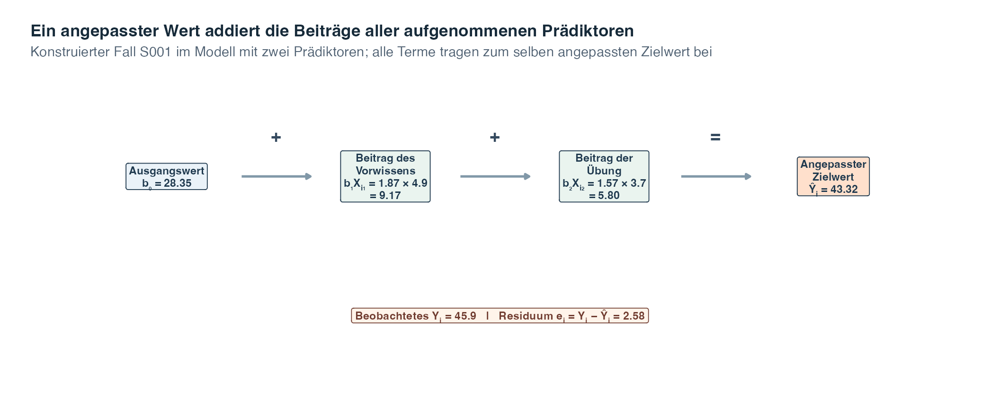
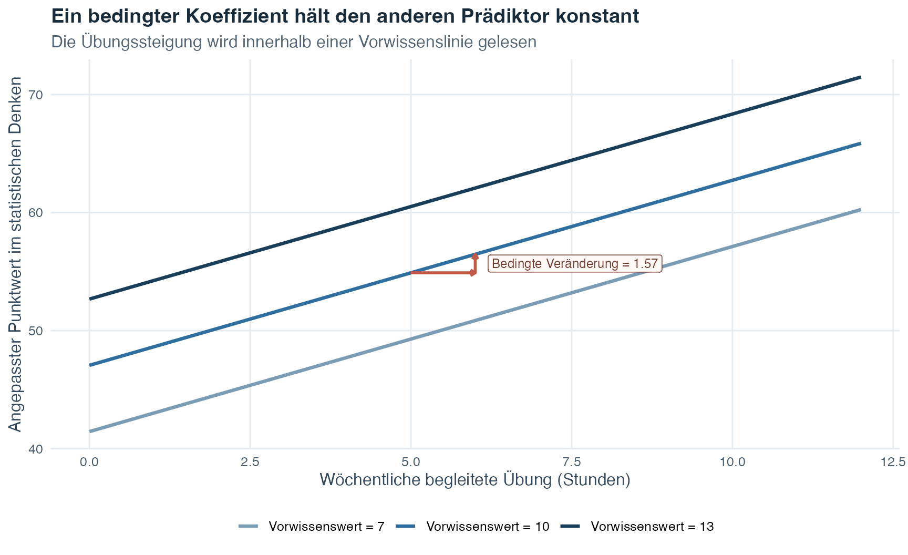
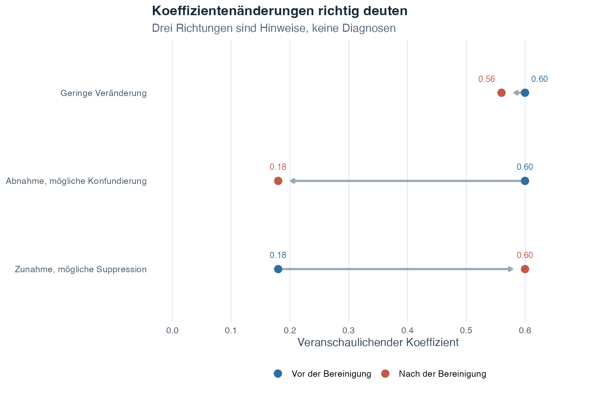
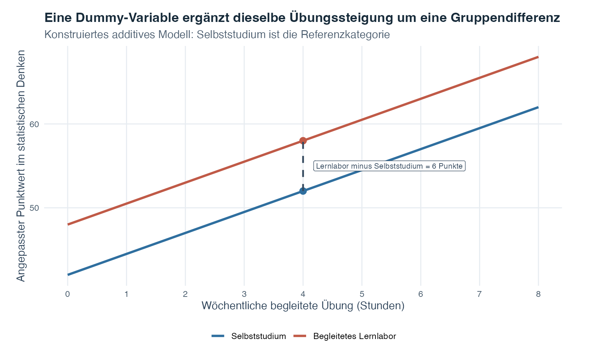

Übungsblatt
Wähle PDF zum Drucken oder Word zum Bearbeiten.
Einführung in die Statistik · Thema 7
Thema 5 verwendete einen Prädiktor, um eine Gerade anzupassen. Thema 6 zeigte, weshalb sich ein Zusammenhang verändern kann, nachdem eine Drittvariable berücksichtigt wurde. Die multiple Regression führt diese Ideen zusammen: Sie modelliert eine quantitative Zielvariable gleichzeitig anhand von zwei oder mehr Prädiktoren.
Das ist wichtig, weil Forschungsfragen nur selten eine einzige relevante Variable betreffen. Ein Punktwert im statistischen Denken kann beispielsweise mit dem Vorwissen, der Übungszeit und dem Lernformat zusammenhängen. Mit der multiplen Regression können wir den Zusammenhang eines Prädiktors schätzen, während wir Fälle vergleichen, die bei den anderen Prädiktoren dieselben modellierten Werte haben.
Das Wort multiple bedeutet nicht, dass mehrere Zielvariablen gleichzeitig analysiert werden. Es gibt weiterhin nur eine Zielvariable. Mehrfach ist die Menge der Prädiktoren, mit denen ihr angepasster Mittelwert beschrieben wird. Das Verfahren ist somit eine direkte Erweiterung der einzelnen Geraden aus Thema 5 und keine völlig neue Art des Denkens.
Leitfrage: Was bedeutet jeder Koeffizient, wenn sich mehrere Prädiktoren überlappen und gemeinsam im selben Modell dargestellt werden?
| Frühere Idee | Welche Frage sie beantwortete | Was Thema 7 hinzufügt |
|---|---|---|
| Pearson-Korrelation | Wie eng bewegen sich zwei quantitative Variablen linear gemeinsam? | Behält die Idee des linearen Zusammenhangs bei, gibt den Variablen aber unterschiedliche Rollen als Zielvariable und Prädiktor |
| Einfache lineare Regression | Wie verändert sich eine angepasste Zielvariable mit einem Prädiktor? | Vereint mehrere Prädiktorterme in derselben angepassten Gleichung |
| Partielle Korrelation | Wie hängen zwei Variablen zusammen, nachdem beide um eine Drittvariable bereinigt wurden? | Schätzt mehrere bedingte Prädiktorkoeffizienten gemeinsam und behält dabei eine benannte Zielvariable bei |
Lies die Tabelle als Entwicklung. Die Korrelation schafft die Sprache für gepaarte lineare Bewegung. Die einfache Regression fügt eine Richtung und eine angepasste Gerade hinzu. Die partielle Korrelation führt die Bereinigung ein. Die multiple Regression behält die Perspektive der angepassten Zielvariable bei und nimmt mehrere solche Bereinigungen innerhalb eines Modells vor.
Dieser Vergleich heisst statistische Bereinigung oder statistische Kontrolle. Er ist nützlich, aber nicht dasselbe wie experimentelle Kontrolle. Das Hinzufügen von Variablen zu einem Beobachtungsmodell erzeugt keine Zufallszuweisung und belegt für sich allein keine Kausalität.
Ein Koeffizient der multiplen Regression beantwortet eine bedingte Frage: Wie unterscheidet sich der angepasste Mittelwert der Zielvariable in Abhängigkeit von einem Prädiktor, wenn alle anderen Terme desselben Modells konstant gehalten werden?
Nach Abschluss dieses Themas kannst du:
Beginnen wir mit zwei Prädiktoren. Eine an die Stichprobe angepasste Gleichung lautet
\[ \widehat{Y}_i=b_0+b_1X_{i1}+b_2X_{i2}. \]
Diese Gleichung setzt eine angepasste Zielvariable aus drei Teilen zusammen: einem Ausgangswert und je einem Beitrag jedes Prädiktors.
| Symbol | Bedeutung in verständlicher Sprache |
|---|---|
| \(i\) | Die beschriebene Zeile oder der beschriebene Fall |
| \(Y_i\) | Die beobachtete quantitative Zielvariable dieses Falls |
| \(X_{i1}\) und \(X_{i2}\) | Die Werte dieses Falls bei Prädiktor 1 und 2 |
| \(b_0\) | Der angepasste Achsenabschnitt, der den Ausgangswert liefert |
| \(b_1X_{i1}\) | Der angepasste Beitrag von Prädiktor 1 für diesen Fall |
| \(b_2X_{i2}\) | Der angepasste Beitrag von Prädiktor 2 für diesen Fall |
| \(\widehat{Y}_i\) | Der von der angepassten Gleichung erzeugte Wert der Zielvariable |
Um einen angepassten Wert zu berechnen, multiplizierst du jeden Prädiktorwert mit seinem Koeffizienten und addierst die Ergebnisse zum Achsenabschnitt. Die beiden Produkte beschreiben keine getrennten Zielvariablen. Sie sind Beiträge zum selben angepassten Mittelwert.
Das nächste Diagramm setzt die Werte eines konstruierten Falls in das Modell mit zwei Prädiktoren ein, das wir im gesamten Theorieabschnitt verwenden. Es macht die Addition sichtbar, bevor wir zu den allgemeinen Symbolen zurückkehren.

Lies die obere Zeile von links nach rechts. Der erste Kasten liefert den angepassten Ausgangswert. Die nächsten beiden Kästen multiplizieren jeden Prädiktorwert dieses Falls mit dem zugehörigen Koeffizienten. Die Addition aller drei Teile ergibt einen einzigen angepassten Punktwert im statistischen Denken und nicht drei getrennte Vorhersagen. Der untere Kasten vergleicht danach diesen vollständig berechneten angepassten Wert mit dem beobachteten Punktwert und berechnet \(e_i=Y_i-\widehat Y_i\).
Die Kästen zeigen auch, weshalb ein Koeffizient nicht losgelöst von der Gleichung interpretiert wird. Derselbe Koeffizient kann bei einem Fall mit einem anderen Prädiktorwert einen anderen numerischen Beitrag liefern, während der Koeffizient selbst die gemeinsame Veränderungsrate pro Einheit bleibt. Die dargestellte Rechnung gehört zu einer künstlichen Zeile und zum angegebenen Modell mit zwei Prädiktoren. Sie garantiert weder dasselbe Ergebnis für einen anderen Fall noch macht sie aus einem der bedingten Zusammenhänge einen kausalen Effekt.
Der Populationszusammenhang enthält einen Fehlerterm:
\[ Y_i=\beta_0+\beta_1X_{i1}+\beta_2X_{i2}+\varepsilon_i. \]
Die griechischen Koeffizienten \(\beta_0,\beta_1,\) und \(\beta_2\) sind unbekannte Populationsparameter. Der Fehler \(\varepsilon_i\) ist die Differenz zwischen der Zielvariable von Fall \(i\) und dem durch seine Prädiktorwerte festgelegten Populationsmittelwert. Die Stichprobenkoeffizienten \(b_0,b_1,\) und \(b_2\) schätzen die entsprechenden Populationsparameter.
Sobald das Modell mit zwei Prädiktoren vertraut ist, lässt sich die kompakte Schreibweise für eine beliebige Anzahl von Prädiktorparametern leichter lesen. \(X_{ij}\) sei der Wert von Fall \(i\) beim Prädiktorterm \(j\). Ein Populationsmodell mit \(p\) Prädiktorparametern lautet
\[ Y_i = \beta_0 + \sum_{j=1}^{p}\beta_jX_{ij} + \varepsilon_i. \]
Dabei gilt:
Das Summenzeichen \(\sum\) bedeutet: “Addiere die Prädiktorbeiträge von \(j=1\) bis \(j=p\).” Es drückt dieselbe Logik in einer kürzeren Gleichung aus. Eine Stichprobe schätzt die Populationskoeffizienten mit \(b_0,b_1,\ldots,b_p\). Der angepasste Wert für Fall \(i\) lautet
\[ \widehat{Y}_i = b_0 + \sum_{j=1}^{p}b_jX_{ij}. \]
Der Achsenabschnitt \(b_0\) ist der angepasste Mittelwert der Zielvariable, wenn jeder quantitative Prädiktor null ist und sich jeder kategoriale Prädiktor in seiner Referenzkategorie befindet. Diese Kombination kann mathematisch eindeutig, aber inhaltlich wenig hilfreich sein, wenn null ausserhalb des beobachteten Wertebereichs liegt.
Dasselbe Symbol \(p\) zählt Prädiktorparameter und nicht unbedingt benannte Variablen. Eine kategoriale Variable mit drei Kategorien benötigt zwei Prädiktorparameter, wenn das Modell einen Achsenabschnitt enthält.
Bei einem Prädiktor benötigte Thema 5 einen Achsenabschnitt und einen Steigungsbeitrag. Die multiple Regression behält genau diese Rechnung bei und ergänzt für jeden weiteren Prädiktor einen weiteren Beitrag. An einigen konkreten Profilen ist das leichter zu erkennen als an einer abstrakten dreidimensionalen Fläche.
Die nächste Abbildung verwendet das Modell mit zwei quantitativen Prädiktoren aus dem konstruierten Beispiel. Jeder horizontale Balken ist ein angepasster Wert. Seine drei farbigen Teile sind der Achsenabschnitt, der Beitrag des Vorwissenswerts und der Beitrag der Übungsstunden. Bei den vier Profilen wird bewusst zuerst nur ein Prädiktor und danach werden beide verändert.
Leitfrage: Wenn zwei Profile denselben Vorwissenswert, aber unterschiedliche Übungsstunden haben, welcher Teil ihres angepassten Werts muss sich verändern und welche Teile müssen genau gleich bleiben?

Lies zuerst Profil A. Sein angepasster Punktwert von ungefähr 46,5 ist die Summe derselben drei Terme wie in Abbildung 1. Profil B behält den Vorwissenswert 8 bei, erhöht die Übung aber von 2 auf 6 Stunden. Der Achsenabschnitt und der blaue Vorwissensbeitrag bleiben deshalb unverändert. Nur der orange Übungsbeitrag wächst. Die angepasste Differenz zwischen A und B entspricht vier Übungsstunden multipliziert mit dem angepassten Übungskoeffizienten.
Profil C kehrt diesen Vergleich um. Die Übung bleibt bei zwei Stunden, während der Vorwissenswert von 8 auf 12 steigt. Nur der blaue Vorwissensbeitrag wächst. Profil D verbindet bei beiden Prädiktoren den höheren Wert. Deshalb sind dort beide Prädiktorabschnitte grösser als bei A. Der numerische Beitrag steht in jedem farbigen Abschnitt, und der angepasste Gesamtwert steht am Balkenende. Lies diese Beschriftungen von links nach rechts, um jeden angepassten Wert nachzuvollziehen.
In dieser Abbildung verläuft nichts über die Zeit. Die Balken vergleichen Profile innerhalb einer einzigen angepassten Gleichung. Sie behaupten auch nicht, dass eine Veränderung der Übung oder des Vorwissenswerts die dargestellte Differenz verursachen würde. Ihre Aufgabe ist enger und wichtig: Sie zeigen, dass die multiple Regression weiterhin einen angepassten Wert berechnet, indem sie klar benannte Terme addiert.
In der angepassten Gleichung mit zwei Prädiktoren
\[ \widehat{Y}=b_0+b_1X_1+b_2X_2 \]
ist \(b_1\) die angepasste Differenz im Mittelwert der Zielvariable bei einer Differenz von einer Einheit in \(X_1\), wenn Fälle mit demselben Wert von \(X_2\) verglichen werden. Entsprechend vergleicht \(b_2\) Fälle mit demselben Wert von \(X_1\).
Deshalb wird eine Steigung der multiplen Regression auch partieller Regressionskoeffizient genannt. Sie stellt den Teil des linearen Zusammenhangs eines Prädiktors dar, der verbleibt, nachdem das Modell die anderen Terme berücksichtigt hat. Sie ist keine bivariate Steigung, bei deren Berechnung diese Terme ignoriert werden.
Die Formulierung “konstant halten” beschreibt einen Vergleich innerhalb des angepassten Modells. Sie verspricht weder, dass Forschende die Variable physisch konstant hielten, noch dass jede Prädiktorkombination in den Daten vorkommt oder der Koeffizient ein kausaler Effekt ist.
Die Abbildung hält den Punktwert im statistischen Vorwissen bei drei festen Werten. Innerhalb einer einzelnen Linie geht eine Differenz von einer Übungsstunde mit derselben bedingten angepassten Differenz einher. Beim Wechsel zwischen Linien verändert sich auch der Vorwissenswert. Damit wird der Übungskoeffizient nicht mehr isoliert.

Die drei Linien sind parallel, weil dieses Modell keine Interaktion enthält. Der Vorwissenswert verändert die vertikale Position der angepassten Linie, aber nicht die Übungssteigung. Konzentriere dich auf die mittlere Linie. Der horizontale orange Schritt führt von fünf zu sechs Übungsstunden und bleibt dabei auf der Linie für Vorwissenswert 10. Der vertikale orange Schritt zeigt danach die angepasste Differenz der Zielvariable für genau diese Veränderung um eine Stunde. Dieser Anstieg ist \(b_1\) für die Übung. Ein Vergleich zwischen einem Punkt auf der untersten und einem Punkt auf der obersten Linie würde zugleich den Vorwissenswert verändern. Er würde deshalb zwei Koeffizientenbeiträge vermischen und wäre nicht mehr der Vergleich bei konstant gehaltenem Vorwissenswert.
Statistiksoftware schätzt die Koeffizienten. Du musst die nächste Formel deshalb nicht auswendig lernen. Ihr Zweck besteht darin zu zeigen, weshalb sich eine Steigung der multiplen Regression von einer Steigung der einfachen Regression unterscheidet.
Für zwei quantitative Prädiktoren seien:
Die beiden angepassten Steigungen können so geschrieben werden:
\[ b_1 = \frac{r_{Y1}-r_{Y2}r_{12}}{1-r_{12}^2} \frac{s_Y}{s_{X_1}}, \]
\[ b_2 = \frac{r_{Y2}-r_{Y1}r_{12}}{1-r_{12}^2} \frac{s_Y}{s_{X_2}}. \]
Lies die erste Gleichung in drei Bewegungen. Beginne mit der Korrelation von Prädiktor 1 mit der Zielvariable, \(r_{Y1}\). Ziehe über das Produkt \(r_{Y2}r_{12}\) jenen Teil ab, der mit Prädiktor 2 verbunden ist. Berücksichtige danach die Überlappung der Prädiktoren im Nenner und stelle mit \(s_Y/s_{X_1}\) die ursprünglichen Messeinheiten wieder her. Die zweite Gleichung wiederholt dieselbe Logik mit vertauschten Prädiktorrollen.
| Teil der Formel | Sein Beitrag |
|---|---|
| \(r_{Y1}\) | Der unbereinigte lineare Zusammenhang von Prädiktor 1 mit der Zielvariable |
| \(r_{Y2}r_{12}\) | Das Korrelationsmuster, das Prädiktor 1 mit Prädiktor 2 und der Zielvariable teilt |
| \(1-r_{12}^2\) | Der Anteil der Prädiktorvariation, der nicht durch ihre quadrierte Korrelation dargestellt wird |
| \(s_Y/s_{X_1}\) | Umrechnung aus standardisierten Einheiten zurück in Einheiten der Zielvariable pro Einheit von Prädiktor 1 |
Die Formel zeigt auch, weshalb eine starke Überlappung der Prädiktoren Aufmerksamkeit verdient. Liegt \(r_{12}\) nahe bei \(+1\) oder \(-1\), liegt \(1-r_{12}^2\) nahe bei null. Die Daten enthalten dann wenig Information, um die beiden bedingten Steigungen voneinander zu trennen. Dadurch können die Koeffizientenschätzungen empfindlich auf kleine Veränderungen reagieren. Ist ein Prädiktor eine exakte lineare Kopie des anderen, ist der Nenner null. Die beiden getrennten Steigungen können aus diesem Modell dann nicht geschätzt werden.
Setze die Prädiktorwerte eines Falls in die angepasste Gleichung ein, um \(\widehat{Y}_i\) zu erhalten. Dieser Wert schätzt den bedingten Mittelwert der Zielvariable für Fälle mit diesem Prädiktorprofil. Er kann auch als Punktvorhersage dienen, ist aber kein garantiertes individuelles Ergebnis.
Das Residuum des Falls lautet
\[ e_i=Y_i-\widehat{Y}_i. \]
Ein positives Residuum bedeutet, dass die beobachtete Zielvariable oberhalb des angepassten Werts liegt. Ein negatives Residuum bedeutet, dass sie darunter liegt. Durch Umstellen erhalten wir
\[ Y_i=\widehat{Y}_i+e_i. \]
Der Populationsfehler \(\varepsilon_i\) wird relativ zum unbekannten Populationszusammenhang definiert. Das Stichprobenresiduum \(e_i\) wird relativ zum angepassten Stichprobenmodell berechnet. Ein Residuum kann gewöhnliche Variation, Messfehler, ausgelassene Prädiktoren oder eine Modellform widerspiegeln, die den Zusammenhang nicht erfasst. Das Vorzeichen allein verrät die Ursache nicht.
Auch Vorhersagen benötigen einen Geltungsbereich. Ein angepasster Wert weit ausserhalb der beobachteten Prädiktorbereiche ist eine Extrapolation. Selbst eine Kombination von einzeln vertrauten Prädiktorwerten kann schwach abgestützt sein, wenn diese Kombination in den Daten selten ist oder gar nicht vorkommt.
Ein unstandardisierter Koeffizient \(b_j\) verwendet die ursprünglichen Einheiten. Wird die Übung in Stunden und die Zielvariable in Punkten gemessen, lautet seine Einheit Punkte pro Stunde. Diese Koeffizienten sind die richtige Wahl, um die angepasste Gleichung aufzuschreiben und angepasste Werte zu berechnen.
Ein standardisierter Koeffizient skaliert sowohl den Prädiktor als auch die Zielvariable in Standardabweichungseinheiten. Für einen quantitativen Prädiktor gilt
\[ \widehat{\widetilde{\beta}}_j = b_j\frac{s_{X_j}}{s_Y}, \]
wobei \(s_{X_j}\) die Stichprobenstandardabweichung des Prädiktors und \(s_Y\) die Stichprobenstandardabweichung der Zielvariable ist. Der Koeffizient schätzt die angepasste Differenz der Zielvariable in Standardabweichungen der Zielvariable bei einer Prädiktordifferenz von einer Standardabweichung, während die anderen Modellterme konstant gehalten werden.
Standardisierte Koeffizienten können beim Vergleich von Prädiktoren auf verschiedenen Skalen helfen. Sie sind jedoch keine allgemeingültigen Wichtigkeitswerte. Sie hängen von den anderen Prädiktoren, deren Überlappung, der beobachteten Streuung jeder Variable und der Messqualität ab. Sie benennen weder automatisch eine Ursache noch die nützlichste Intervention.
In der einfachen Regression entspricht die standardisierte Steigung dem Pearson-\(r\). In der multiplen Regression entspricht sie im Allgemeinen nicht der zugehörigen bivariaten Korrelation, weil der Koeffizient bedingt ist und die Korrelation nicht.
| Kennzahl | Einheiten | Andere Prädiktoren bereinigt? | Am besten zu lesen als |
|---|---|---|---|
| Bivariate Korrelation \(r_{Yj}\) | Keine Einheiten | Nein | Linearer Zusammenhang zwischen zwei Variablen |
| Unstandardisierter Koeffizient \(b_j\) | Einheiten der Zielvariable pro Prädiktoreinheit | Ja | Bedingte Veränderung auf der ursprünglichen Messskala |
| Standardisierter Koeffizient \(\widehat{\widetilde{\beta}}_j\) | Standardabweichungseinheiten | Ja | Bedingte Veränderung nach erneuter Skalierung von Prädiktor und Zielvariable |
Anders als eine Korrelation ist ein standardisierter Koeffizient der multiplen Regression mathematisch nicht auf das Intervall von \(-1\) bis \(+1\) beschränkt. Bei ungewöhnlichen Mustern mit stark überlappenden Prädiktoren kann sein Absolutwert grösser als 1 sein. Das macht ihn nicht zu einer stärkeren Art der Korrelation. Es erinnert erneut daran, dass ein bedingter Koeffizient und eine bivariate Korrelation verschiedene Kennzahlen sind.
Drei Kennzahlen beschreiben unterschiedliche Aspekte der Modellgüte.
Der Residualstandardfehler schätzt die typische Streuung der Residuen in den ursprünglichen Einheiten der Zielvariable:
\[ s_e = \sqrt{ \frac{\sum_{i=1}^{n}e_i^2}{n-p-1} }. \]
Dabei ist \(n\) die Anzahl analysierter Fälle, \(p\) die Anzahl der Prädiktorparameter ohne Achsenabschnitt und \(n-p-1\) die Anzahl der Residualfreiheitsgrade. Diese Kennzahl ist nicht dasselbe wie der Standardfehler eines Koeffizienten.
Bei einem Achsenabschnitt zerlegt die gewöhnliche Methode der kleinsten Quadrate die Stichprobenvariation der Zielvariable so:
\[ SS_{\text{gesamt}}=SS_{\text{Modell}}+SS_{\text{Fehler}}. \]
Das Bestimmtheitsmass lautet
\[ R^2 = \frac{SS_{\text{Modell}}}{SS_{\text{gesamt}}} = 1-\frac{SS_{\text{Fehler}}}{SS_{\text{gesamt}}}. \]
\(R^2\) ist der Anteil der Stichprobenvariation der Zielvariable um ihren Mittelwert, den das angepasste Modell darstellt. Es ist weder der Prozentsatz korrekt vorhergesagter Personen noch der Prozentsatz der Zielvariable, den die Prädiktoren verursacht haben.
Das Hinzufügen eines Prädiktors zu einem OLS-Modell kann das gewöhnliche Stichproben-\(R^2\) nicht verkleinern, wenn Zielvariable, Fälle und Achsenabschnitt gleich bleiben. Selbst ein nutzloser Term kann \(R^2\) leicht erhöhen. Das korrigierte \(R^2\) berücksichtigt das Schätzen zusätzlicher Prädiktorparameter innerhalb der Stichprobe mit einem Abzug:
\[ R^2_{\text{korrigiert}} = 1-(1-R^2)\frac{n-1}{n-p-1}. \]
Das korrigierte \(R^2\) kann sinken, wenn die zusätzliche Anpassung im Verhältnis zur zusätzlichen Komplexität zu klein ist. Es ist dennoch kein Test an neuen Daten und garantiert keine Generalisierbarkeit.
Der globale Modelltest fragt, ob alle Populationskoeffizienten ausser dem Achsenabschnitt null sind:
\[ H_0:\beta_1=\beta_2=\cdots=\beta_p=0. \]
Seine Teststatistik kann so geschrieben werden:
\[ F = \frac{R^2/p}{(1-R^2)/(n-p-1)}. \]
Unter den Modellbedingungen und der globalen Nullhypothese wird dieser Wert mit einer \(F\)-Verteilung mit \(p\) und \(n-p-1\) Freiheitsgraden verglichen. Ein kleiner globaler p-Wert bedeutet, dass die Daten mit der Annahme, alle Steigungen seien null, nicht vereinbar sind. Er sagt nicht, welcher Koeffizient von null abweicht.
Ein Test für einen einzelnen Koeffizienten stellt eine enger gefasste bedingte Frage:
\[ H_0:\beta_j=0, \qquad t=\frac{b_j}{SE(b_j)}. \]
Die Teststatistik verwendet \(n-p-1\) Residualfreiheitsgrade. \(SE(b_j)\) misst die Stichprobenunsicherheit dieses Koeffizienten unter dem angepassten Modell. Jeder Koeffiziententest ist von genau den anderen enthaltenen Termen abhängig. Wird das Modell verändert, können sich die Schätzung, ihr Standardfehler und ihr p-Wert verändern.
Ein statistisch nachweisbarer Koeffizient ist nicht automatisch gross, kausal, praktisch bedeutsam oder für künftige Vorhersagen nützlich. Das sind getrennte Fragen.
Zwei Modelle sind verschachtelt, wenn das kleinere, eingeschränkte Modell dadurch aus dem grösseren, uneingeschränkten Modell gewonnen werden kann, dass ein oder mehrere Koeffizienten auf null gesetzt werden. Ein Modell ohne zwei Interaktionsterme ist beispielsweise im ansonsten gleichen Modell mit diesen Interaktionen verschachtelt.
\(R\) bezeichne das eingeschränkte und \(U\) das uneingeschränkte Modell. Wenn das grössere Modell \(p_U-p_R\) Prädiktorparameter hinzufügt, lautet die Teststatistik für verschachtelte Modelle
\[ F = \frac{(R_U^2-R_R^2)/(p_U-p_R)}{(1-R_U^2)/(n-p_U-1)}. \]
Der Zähler misst die zusätzlich erklärte Variation pro zusätzlichem Parameter. Der Nenner misst die Residualvariation pro Residualfreiheitsgrad im uneingeschränkten Modell.
Dieser Test fragt, ob die hinzugefügten Koeffizienten gemeinsam null sind. Beide Modelle müssen dieselbe Zielvariable und dieselben analysierten Fälle verwenden. Ähnlich aussehende Modelle sind nicht zwingend verschachtelt. Modelle, die an unterschiedliche Stichproben angepasst wurden, können mit dieser Formel nicht verglichen werden.
Nehmen wir an, ein Modell enthält bereits den Vorwissenswert und wir erwägen, Übungsstunden hinzuzufügen. Eine semipartielle Korrelation, auch Teilkorrelation genannt, isoliert den linearen Beitrag des Kandidatenprädiktors in zwei Schritten:
Nur der Kandidatenprädiktor wird residualisiert. Darin liegt der Unterschied zur partiellen Korrelation aus Thema 6, bei der beide interessierenden Variablen auf die Kontrollvariable residualisiert werden.
Für einen hinzugefügten Prädiktor und dieselben analysierten Fälle gilt
\[ sr_j^2=R^2_{\text{grösser}}-R^2_{\text{kleiner}}=\Delta R^2. \]
Die quadrierte semipartielle Korrelation ist somit der eindeutige Zuwachs des Stichproben-\(R^2\) des Modells, wenn dieser Prädiktor zuletzt hinzugefügt wird. “Eindeutig” bedeutet hier, dass der Beitrag nicht linear durch die bereits aufgenommenen Prädiktoren dargestellt wird. Es bedeutet nicht, dass er kausal rein oder frei von allen anderen Einflüssen ist.
Prädiktoren überlappen sich häufig. Die Übungszeit und das Vorwissen können beispielsweise korreliert sein. Ihre bivariaten Zusammenhänge mit einer Zielvariable enthalten dann gemeinsame Information. Das Modell muss festlegen, wie der angepasste Zusammenhang auf die bedingten Koeffizienten verteilt dargestellt wird.
Wenn ein Koeffizient nach der Bereinigung kleiner wird, könnte der bivariate Zusammenhang Variation enthalten haben, die er mit einem anderen Prädiktor teilt. Dieses Muster kann mit Konfundierung vereinbar sein. Dabei trägt eine Drittvariable zum Zusammenhang zwischen Prädiktor und Zielvariable bei. Die numerische Veränderung allein beweist weder eine Konfundierung noch eine kausale Struktur.
Wenn ein Koeffizient nach der Bereinigung grösser wird, könnte ein anderer Prädiktor relevante Variation verdeckt haben. Dieses Muster wird häufig Suppression genannt. In der Gegenüberstellung angepasster Modelle kann die Bereinigung einen mit der Suppressorvariable verbundenen Prädiktoranteil gesondert darstellen, wenn dieser Anteil nicht oder in entgegengesetzter Richtung mit der Zielvariable zusammenhängt. Der verbleibende bedingte Zusammenhang kann dadurch deutlicher oder grösser erscheinen.
Die schematische Abbildung zeigt drei mögliche Richtungen. Es handelt sich um Lehrwerte, nicht um Ergebnisse aus der simulierten Kohorte und nicht um diagnostische Grenzwerte.

In jeder Zeile ist der blaue Punkt der Koeffizient vor und der orange Punkt der Koeffizient nach der Bereinigung. Der Pfeil zeigt die numerische Veränderung und keine Veränderung im Zeitverlauf. In der ersten Zeile bleiben die beiden Punkte nahe beieinander. In der zweiten bewegt die Bereinigung den Koeffizienten in Richtung null. In der dritten bewegt sie ihn von null weg. Die Bezeichnungen “mögliche Konfundierung” und “mögliche Suppression” benennen Interpretationen, die untersucht werden sollten. Sie sind keine Schlussfolgerungen, die der Pfeil automatisch erzeugt.
Eine starke Überlappung der Prädiktoren kann dazu führen, dass die Zuordnung der gemeinsamen Variation empfindlich auf kleine Daten- oder Modelländerungen reagiert. Interpretiere die Koeffizienten gemeinsam, untersuche die Beziehungen zwischen den Prädiktoren und nutze Fachwissen. Hier gibt es keinen einzelnen numerischen Grenzwert, der für sich allein entscheiden kann, wann die Prädiktorüberlappung zu stark ist. Deshalb wird keine automatische Regel verwendet.
Die nächsten beiden konstruierten Korrelationsmuster machen den Unterschied berechenbar. \(X\) bezeichnet den interessierenden Prädiktor, \(Z\) den anderen Prädiktor und \(Y\) die Zielvariable. Sämtliche Einträge sind Lehrwerte. Sie stammen weder aus der simulierten Kohorte noch dienen sie als Grenzwerte für die Diagnose eines realen Datensatzes.
| Muster | \(r_{XY}\) | \(r_{XZ}\) | \(r_{ZY}\) | Standardisierter Koeffizient von X nach Aufnahme von Z | Was das Muster nahelegt |
|---|---|---|---|---|---|
| Mögliche Konfundierung | 0.60 | 0.70 | 0.73 | 0.17 | Der interessierende Prädiktor und der andere Prädiktor tragen einen grossen Teil derselben zielbezogenen Information. |
| Mögliche Suppression | 0.18 | 0.60 | -0.34 | 0.60 | Der andere Prädiktor entfernt überlappende Variation, die vom Zusammenhang zwischen dem interessierenden Prädiktor und der Zielvariable wegweist. |
In der Zeile zur möglichen Konfundierung beginnt der bivariate Zusammenhang bei \(r_{XY}=0.60\). Sowohl \(r_{XZ}=0.70\) als auch \(r_{ZY}=0.73\) sind stark und positiv. \(X\) und \(Z\) tragen somit einen grossen Teil desselben zielbezogenen Musters. Das Einsetzen in die Formel für den standardisierten Koeffizienten bei zwei Prädiktoren ergibt
\[ \widehat{\widetilde\beta}_X = \frac{0.60-(0.73)(0.70)}{1-0.70^2} =0.18\ \text{ungefähr}. \]
Der Koeffizient wird kleiner, weil das Modell das gemeinsame Muster nicht mehr vollständig \(X\) zuordnet. Diese Rechnung ist mit einer Konfundierung vereinbar. Die Korrelationen allein zeigen jedoch nicht, welche Variable in einem kausalen Prozess zuerst kommt.
In der Zeile zur möglichen Suppression besitzt \(X\) nur einen mässigen bivariaten Zusammenhang mit \(Y\), nämlich \(r_{XY}=0.18\). Prädiktor \(Z\) überlappt positiv mit \(X\), \(r_{XZ}=0.60\), weist aber in die entgegengesetzte Richtung von \(Y\), \(r_{ZY}=-0.34\). Wenn das Modell diese gegenläufige Überlappung trennt, wird der Koeffizient von \(X\) zu
\[ \widehat{\widetilde\beta}_X = \frac{0.18-(-0.34)(0.60)}{1-0.60^2} =0.60. \]
Wie kann das geschehen? Stell dir vor, ein konstruierter Screening-Punktwert \(X\) vermischt die Fähigkeit, die uns interessiert, mit einer zusätzlichen Antworttendenz. Prädiktor \(Z\) erfasst einen grossen Teil dieser Antworttendenz, und diese Tendenz weist von der späteren Zielvariable \(Y\) weg. Durch die Aufnahme von \(Z\) kann das angepasste Modell diese gegenläufige Überlappung gesondert darstellen. Der Koeffizient von \(X\) beschreibt danach seinen bedingten Zusammenhang bei einem festen Wert von \(Z\) und kann grösser sein als der bivariate Zusammenhang. Dieses Muster ist mit Suppression vereinbar, legt aber keine reinen Bestandteile in einer der gemessenen Variablen offen. Auch der grössere Koeffizient belegt nicht, dass \(X\) \(Y\) verursacht. Eine Suppressorvariable sollte zudem nicht allein deshalb aufgenommen werden, weil sie einen bevorzugten Koeffizienten vergrössert.
Bisher war jeder Prädiktor in der angepassten Gleichung eine Zahl: Vorwissenswert, Übungsstunden oder eine andere gemessene Grösse. Viele sinnvolle Fragen enthalten aber auch Kategorien. Was geschieht, wenn wir Lernformate, Therapiebedingungen oder Studienprogramme vergleichen und gleichzeitig um einen quantitativen Prädiktor bereinigen möchten?
Eine Kategorienbezeichnung kann nicht einfach mit einer Steigung multipliziert werden. Ebenso wenig sollten wir ungeordnete Bezeichnungen durch 1, 2 und 3 ersetzen und so tun, als hätte der Schritt von Kategorie 1 zu 2 dieselbe Bedeutung wie der Schritt von 2 zu 3. Die Dummy-Codierung, auch Indikatorcodierung genannt, übersetzt die Kategorienzugehörigkeit in eine oder mehrere Spalten, die nur 0 und 1 enthalten. Das Modell kann dadurch benannte Vergleiche bilden, ohne eine Reihenfolge oder Distanz zu erfinden.
Leitfrage: Wie kann eine Gleichung zwei Gruppen bei demselben Übungswert vergleichen und zugleich jeden angepassten Wert numerisch nachprüfbar halten?
Beginnen wir mit einem quantitativen Prädiktor und zwei Kategorien. \(X\) bezeichne die wöchentlichen Übungsstunden. Das Selbststudium ist die Referenzkategorie, also die Gruppe, von der aus die andere Gruppe beschrieben wird. Wir definieren
\[ D_{\text{Lernlabor}}= \begin{cases} 1 & \text{begleitetes Lernlabor},\\ 0 & \text{Selbststudium}. \end{cases} \]
Betrachte dieses konstruierte additive Modell:
\[ \widehat{Y}=42+2.5X+6D_{\text{Lernlabor}}. \]
Additiv bedeutet, dass der Übungsbeitrag und der Gruppenbeitrag als getrennte Terme addiert werden. Setze den Indikatorwert ein, bevor du die Gleichung interpretierst.
Für das Selbststudium ist \(D_{\text{Lernlabor}}=0\):
\[ \widehat{Y}_{\text{Selbststudium}}=42+2.5X. \]
Für das begleitete Lernlabor ist \(D_{\text{Lernlabor}}=1\):
\[ \widehat{Y}_{\text{Lernlabor}}=42+2.5X+6=48+2.5X. \]
Bei vier Übungsstunden ist die gesamte Rechnung in der nächsten Tabelle sichtbar.
| Lernformat | Übungsstunden X | Lernlabor-Indikator D | Ausgangswert 42 | Übungsbeitrag 2.5X | Gruppenbeitrag 6D | Angepasster Punktwert |
|---|---|---|---|---|---|---|
| Selbststudium | 4 | 0 | 42 | 10 | 0 | 52 |
| Begleitetes Lernlabor | 4 | 1 | 42 | 10 | 6 | 58 |
Beide Zeilen haben denselben Übungsbeitrag, \(2.5(4)=10\). Die Zeile zum Selbststudium erhält keinen Gruppenbeitrag und ergibt \(42+10+0=52\). Die Zeile zum begleiteten Lernlabor erhält den Gruppenbeitrag von sechs Punkten und ergibt \(42+10+6=58\). Da wir die beiden Formate bei demselben Übungswert vergleichen, beträgt die angepasste Differenz zwischen Lernlabor und Selbststudium sechs Punkte.
Die Koeffizienten haben nun genaue Bedeutungen in Bezug auf die Referenz:

Die parallelen Linien sind wichtig. Da kein Interaktionsterm vorhanden ist, beträgt die angepasste Gruppendifferenz bei null, vier oder acht Übungsstunden immer sechs Punkte. Das Modell erlaubt einen Unterschied in der Höhe der Linien, aber keinen Unterschied in ihrer Steilheit.
Die Reihenfolge additiver Terme verändert das Modell nicht. Die Schreibweisen
\[ 42+2.5X+6D_{\text{Lernlabor}} \qquad\text{und}\qquad 42+6D_{\text{Lernlabor}}+2.5X \]
erzeugen genau dieselben angepassten Werte, weil Summanden umgeordnet werden dürfen. Entsprechend verändert sich nur die Bezeichnung, wenn die Übung \(X_1\) und der Indikator \(X_2\) heisst oder wenn diese Indizes vertauscht werden. Jeder Koeffizient muss dabei mit der richtigen Variable verbunden bleiben. Die Abbildung und die Vorhersagen bleiben gleich. Ob ein Prädiktor quantitativ oder kategorial ist, ergibt sich unabhängig von Name und Spaltenposition aus seiner erfassten Bedeutung und Codierung.
Ein Wechsel der Referenzkategorie verändert hingegen die Beschreibung der Koeffizienten, aber weiterhin nicht den angepassten Zusammenhang. Wird das begleitete Lernlabor zur Referenz und kennzeichnet \(D_{\text{Selbststudium}}=1\) das Selbststudium, lassen sich dieselben beiden Linien so schreiben:
\[ \widehat{Y}=48+2.5X-6D_{\text{Selbststudium}}. \]
Der Achsenabschnitt ist nun 48, weil er zur Referenzlinie des Lernlabors gehört. Der Dummy-Koeffizient ist nun \(-6\), weil er das Selbststudium mit dem Lernlabor vergleicht. Bei vier Übungsstunden liefern beide Parametrisierungen weiterhin 52 für das Selbststudium und 58 für das Lernlabor.
| Referenz der Koeffizienten | Angepasster Punktwert des Selbststudiums bei X = 4 | Angepasster Punktwert des Lernlabors bei X = 4 |
|---|---|---|
| Referenz: Selbststudium | 52 | 58 |
| Referenz: Begleitetes Lernlabor | 52 | 58 |
Bei \(k\) Kategorien und einem Achsenabschnitt benötigt dieselbe Logik \(k-1\) Dummy-Variablen. Bei drei Lernformaten mit dem Selbststudium als Referenz definieren wir \(D_{\text{Peer}}\) und \(D_{\text{Lernlabor}}\). Die Referenzgruppe hat \((0,0)\), der Peer-Workshop \((1,0)\) und das begleitete Lernlabor \((0,1)\). Das additive Modell lautet
\[ \widehat{Y} = b_0+b_1X+b_2D_{\text{Peer}}+b_3D_{\text{Lernlabor}}. \]
Dabei ist \(b_2\) Peer minus Selbststudium und \(b_3\) Lernlabor minus Selbststudium, jeweils beim selben Wert von \(X\). Alle drei Gruppenindikatoren zusammen mit einem Achsenabschnitt zu verwenden, würde eine exakte Redundanz erzeugen, weil sich die drei Indikatoren in jeder Zeile zu eins summieren.
Die Codiertabelle macht die drei angepassten Gleichungen sichtbar, bevor wir Zahlen einsetzen:
| Lernformat | \(D_{\text{Peer}}\) | \(D_{\text{Lernlabor}}\) | Additive angepasste Gleichung |
|---|---|---|---|
| Selbststudium, Referenz | 0 | 0 | \(b_0+b_1X\) |
| Peer-Workshop | 1 | 0 | \((b_0+b_2)+b_1X\) |
| Begleitetes Lernlabor | 0 | 1 | \((b_0+b_3)+b_1X\) |
Lies jeweils eine Zeile. In der Referenzzeile sind beide Schalter aus, daher verschwinden beide Gruppenbeiträge. In der Peer-Zeile wird nur \(b_2\) addiert. In der Lernlabor-Zeile wird nur \(b_3\) addiert. Der gemeinsame Term \(b_1X\) steht in jeder Zeile. Deshalb sind alle drei angepassten Linien in diesem additiven Modell parallel. Die beiden Dummy-Koeffizienten sind getrennte Vergleiche mit der Referenzgruppe und keine aufeinanderfolgenden Schritte auf einer geordneten Skala.
Das additive Modell hat die multiple Regression nun um einen kategorialen Prädiktor erweitert. Dabei hat es aber stillschweigend angenommen, dass beide Gruppen dieselbe Übungssteigung haben. Das kann sinnvoll oder zu einschränkend sein. Vielleicht wird die angepasste Differenz zwischen den Lernformaten mit zunehmender Übungszeit grösser. Eine konstante Differenz von sechs Punkten könnte diesen Zusammenhang dann nicht beschreiben.
Eine Interaktion erlaubt, dass der Zusammenhang eines Prädiktors von einem anderen Prädiktor abhängt. In unserem Beispiel fragt sie, ob sich die angepasste Übungssteigung zwischen den Lernformaten unterscheidet. Das Modell geht über eine weitere Gruppendifferenz hinaus und ergänzt ein Produkt, das nur grösser wird, wenn sowohl \(X\) als auch \(D\) von null verschieden sind.
Leitfrage: Bleiben die beiden angepassten Linien parallel, oder verändert sich ihr Abstand mit zunehmender Übung?
Für Übungsstunden \(X\) und einen binären Gruppenindikator \(D\) lautet das allgemeine Interaktionsmodell
\[ \widehat{Y}=b_0+b_1X+b_2D+b_3XD. \]
Das Produkt \(XD\) ist der Interaktionsterm. Setze nacheinander die beiden Indikatorwerte ein, damit die beiden angepassten Geraden sichtbar werden.
Für die Referenzgruppe gilt \(D=0\):
\[ \widehat{Y}=b_0+b_1X. \]
Für die Vergleichsgruppe gilt \(D=1\):
\[ \widehat{Y}=(b_0+b_2)+(b_1+b_3)X. \]
Daher gilt:
Kehren wir zum numerischen additiven Beispiel zurück und ergänzen einen Interaktionskoeffizienten von \(1.5\):
\[ \widehat{Y}=42+2.5X+6D_{\text{Lernlabor}}+1.5XD_{\text{Lernlabor}}. \]
Für das Selbststudium ist \(D_{\text{Lernlabor}}=0\). Deshalb verschwinden beide Terme mit dem Indikator:
\[ \widehat{Y}_{\text{Selbststudium}}=42+2.5X. \]
Für das begleitete Lernlabor ist \(D_{\text{Lernlabor}}=1\):
\[ \widehat{Y}_{\text{Lernlabor}} =42+2.5X+6+1.5X =48+4X. \]
Die Steigung des Lernlabors beträgt \(2.5+1.5=4\) Punkte pro Übungsstunde. Der Interaktionskoeffizient \(1.5\) ist somit eine Differenz zwischen Steigungen und keine weitere Verschiebung der Linienhöhe. Bei null Übungsstunden beträgt die angepasste Gruppendifferenz weiterhin sechs Punkte. Bei vier Stunden beträgt sie \(6+1.5(4)=12\) Punkte und bei acht Stunden \(6+1.5(8)=18\) Punkte.
| Modell | Übungsstunden | Angepasster Punktwert des Selbststudiums | Angepasster Punktwert des Lernlabors | Lernlabor minus Selbststudium |
|---|---|---|---|---|
| Additiv: parallele Steigungen | 0 | 42 | 48 | 6 |
| Additiv: parallele Steigungen | 4 | 52 | 58 | 6 |
| Additiv: parallele Steigungen | 8 | 62 | 68 | 6 |
| Interaktion: bedingte Steigungen | 0 | 42 | 48 | 6 |
| Interaktion: bedingte Steigungen | 4 | 52 | 64 | 12 |
| Interaktion: bedingte Steigungen | 8 | 62 | 80 | 18 |

Lies die Teilgrafiken von links nach rechts. Im additiven Modell erhöht ein Schritt um eine Stunde beide Linien um 2,5 Punkte. Ihr vertikaler Abstand bleibt deshalb sechs Punkte. Im Interaktionsmodell steigt die Linie des Selbststudiums weiterhin um 2,5 Punkte, die Linie des Lernlabors aber um vier Punkte. Die Linien entfernen sich voneinander. Genau darin wird diese positive Interaktion sichtbar.
Die Koeffizienten der niedrigeren Ordnung bleiben bedeutsam, ihre Bedeutung ist aber bedingt. Im Interaktionsmodell ist \(b_1=2.5\) die Übungssteigung in der Referenzgruppe, \(b_2=6\) die Differenz zwischen Lernlabor und Selbststudium bei \(X=0\), und \(b_3=1.5\) die Differenz zwischen den Übungssteigungen. Wenn null ausserhalb des sinnvollen Übungsbereichs liegt, kann das Subtrahieren einer sinnvollen Konstante von \(X\), das sogenannte Zentrieren, den Vergleichspunkt verschieben, ohne eine der angepassten Linien zu verändern.
Bei drei Gruppen benötigt das Modell zwei Dummy-Terme und zwei Interaktionsterme aus Übung und Dummy-Variable. Jede Interaktion vergleicht eine Nichtreferenzsteigung mit der Steigung der Referenzgruppe. Ein Referenzwechsel verändert, welche Steigungsdifferenzen als Koeffizienten erscheinen. Die angepassten Gruppenlinien bleiben jedoch unverändert.
Das binäre Beispiel hat die Interaktionsidee einzeln sichtbar gemacht. Eine realistische multiple Regressionsgleichung kann alle Bausteine gleichzeitig enthalten: einen weiteren quantitativen Prädiktor zur statistischen Kontrolle, einen durch mehrere Indikatoren dargestellten kategorialen Prädiktor und mehrere Interaktionsterme. Die Schreibweise wirkt dicht, doch die Lesestrategie bleibt gleich. Lege eine Gruppe fest, setze ihre Nullen und Einsen ein, vereinfache die Gleichung und interpretiere erst dann ihre Linie.
Sei \(P\) ein Vorwissenswert, \(X\) die wöchentlichen Übungsstunden und das Lernformat derselbe dreistufige Prädiktor wie oben. Betrachte dieses konstruierte angepasste Modell:
\[ \widehat{Y} = 30+0.4P+2X +3D_{\text{Peer}}+6D_{\text{Lernlabor}} +0.5XD_{\text{Peer}}+1.5XD_{\text{Lernlabor}}. \]
Leitfrage: Welche Terme bleiben für jedes Lernformat erhalten, und was bedeuten sie für die angepasste Übungssteigung, wenn der Vorwissenswert konstant gehalten wird?
Die beiden Indikatorwerte beantworten diese Frage schrittweise:
| Lernformat | Indikatorpaar \((D_{\text{Peer}},D_{\text{Lernlabor}})\) | Nach dem Einsetzen verbleibende Terme | Gruppenspezifische angepasste Gleichung |
|---|---|---|---|
| Selbststudium, Referenz | \((0,0)\) | \(30+0.4P+2X\) | \(\widehat{Y}_{\text{Selbststudium}}=30+0.4P+2X\) |
| Peer-Workshop | \((1,0)\) | \(30+0.4P+2X+3+0.5X\) | \(\widehat{Y}_{\text{Peer}}=33+0.4P+2.5X\) |
| Begleitetes Lernlabor | \((0,1)\) | \(30+0.4P+2X+6+1.5X\) | \(\widehat{Y}_{\text{Lernlabor}}=36+0.4P+3.5X\) |
Beginne mit dem, was alle drei Gleichungen gemeinsam haben. Der Koeffizient \(0.4\) besagt: Innerhalb jedes Lernformats und bei derselben Übungszeit geht ein um einen Punkt höherer Vorwissenswert mit einem um \(0.4\) Punkte höheren angepassten Zielwert einher. Dieses Modell enthält keine Interaktion zwischen Vorwissen und Lernformat. Deshalb gilt diese bedingte Vorwissenssteigung für alle drei Formate.
Vergleiche nun die Übungsterme. Das Selbststudium hat die Steigung \(2\). Die Steigung des Peer-Workshops beträgt \(2+0.5=2.5\), jene des Lernlabors \(2+1.5=3.5\). Somit ist \(0.5\) die Differenz der Übungssteigungen zwischen Peer-Workshop und Selbststudium, während \(1.5\) die entsprechende Differenz zwischen Lernlabor und Selbststudium ist. Keine dieser beiden Zahlen ist für sich allein eine vollständige Gruppensteigung.
Auch die angepassten Gruppendifferenzen hängen von \(X\) ab:
\[ \widehat{Y}_{\text{Peer}}-\widehat{Y}_{\text{Selbststudium}}=3+0.5X, \qquad \widehat{Y}_{\text{Lernlabor}}-\widehat{Y}_{\text{Selbststudium}}=6+1.5X. \]
Bei \(X=0\) sind die Dummy-Koeffizienten 3 und 6 die angepassten Gruppendifferenzen beim selben Vorwissenswert. Bei anderen Übungswerten muss der Interaktionsbeitrag dazugerechnet werden. Halten wir beispielsweise den Vorwissenswert bei \(P=50\) und die Übungszeit bei \(X=4\) fest:
\[ \begin{aligned} \widehat{Y}_{\text{Selbststudium}}&=30+0.4(50)+2(4)=58,\\ \widehat{Y}_{\text{Peer}}&=33+0.4(50)+2.5(4)=63,\\ \widehat{Y}_{\text{Lernlabor}}&=36+0.4(50)+3.5(4)=70. \end{aligned} \]
Die Differenz zwischen Peer-Workshop und Selbststudium beträgt \(3+0.5(4)=5\) Punkte, jene zwischen Lernlabor und Selbststudium \(6+1.5(4)=12\) Punkte. Dies sind Vergleiche angepasster bedingter Mittelwerte bei gleichem \(P\) und \(X\). Sie sind keine garantierten Unterschiede zwischen einzelnen Lernenden und ohne ein geeignetes Design auch keine kausalen Effekte.
Die angepasste Gleichung und die Inferenzfrage müssen Term für Term zusammenpassen. Die Kursunterlagen stützen die drei oben eingeführten Testwerkzeuge: den \(t\)-Test eines einzelnen Koeffizienten, den gemeinsamen beziehungsweise verschachtelten \(F\)-Test und den globalen \(F\)-Test. Das komplexe Modell zeigt, weshalb sie nicht austauschbar sind.
| Frage | Nullhypothese im Modell oben | Passender, in den Unterlagen behandelter Test |
|---|---|---|
| Unterscheidet sich die Übungssteigung der Referenzgruppe von null, bedingt auf alle anderen Terme? | \(H_0:\beta_2=0\) | \(t\)-Test eines einzelnen Koeffizienten |
| Unterscheidet sich die Übungssteigung des Lernlabors von der Referenzsteigung? | \(H_0:\beta_6=0\) | \(t\)-Test des einzelnen Interaktionskoeffizienten |
| Unterscheiden sich die Übungssteigungen irgendwo zwischen den drei Formaten? | \(H_0:\beta_5=\beta_6=0\) | Verschachtelter \(F\)-Test zwischen Interaktions- und additivem Modell |
| Trägt in dieser vollständigen Spezifikation irgendein Term ausser dem Achsenabschnitt bei? | \(H_0:\beta_1=\cdots=\beta_6=0\) | Globaler \(F\)-Test des Modells |
Eine weitere Unterscheidung ist wichtig. Der Test \(H_0:\beta_3=\beta_4=0\) innerhalb des Interaktionsmodells fragt, ob die Gruppendifferenzen genau bei \(X=0\) und konstant gehaltenem \(P\) null sind. Er prüft nicht, ob das Lernformat bei jedem Übungswert bedeutungslos ist. Ein hierarchischer gemeinsamer Test aller formatbezogenen Terme vergleicht stattdessen das vollständige Modell mit einem Modell, aus dem \(D_{\text{Peer}}\), \(D_{\text{Lernlabor}}\), \(XD_{\text{Peer}}\) und \(XD_{\text{Lernlabor}}\) gemeinsam entfernt wurden. Ein Wechsel der Referenzgruppe ändert die Beschreibung einzelner Koeffizienten, nicht aber die angepassten Gruppenlinien oder das Ergebnis des entsprechenden gemeinsamen Interaktionsvergleichs.
Die Modellbildung sollte mit der Forschungsfrage, dem Messplan, dem Design und einer plausiblen funktionalen Form beginnen. Damit ist die mathematische Form gemeint, die den Zusammenhang darstellt, beispielsweise Geraden mit oder ohne Interaktionen. Automatisierte Auswahlverfahren können diese Entscheidungen nicht liefern.
Das Akaike-Informationskriterium, kurz AIC, gleicht Modellanpassung und Anzahl geschätzter Parameter gegeneinander ab:
\[ AIC=-2\log(L)+2k. \]
In dieser Formel ist \(L\) die Likelihood, ausgewertet bei den angepassten Parameterwerten. Die Likelihood misst, wie gut die beobachteten Daten unter dem Modell mit bestimmten Parameterwerten vereinbar sind. Die in \(L\) eingesetzten angepassten Parameterwerte sind jene Werte, welche die Likelihood für diese Daten so gross wie möglich machen. Deshalb wird sie auch maximierte Likelihood genannt. Der Ausdruck \(\log(L)\) ist der natürliche Logarithmus dieser Likelihood und bringt sie auf eine praktischere additive Skala. Das Symbol \(k\) zählt die in der Likelihood geschätzten Parameter. Ein kleinerer AIC zeigt bei Kandidatenmodellen, die an dieselbe Zielvariable und dieselben Beobachtungen angepasst wurden, ein besseres Gleichgewicht zwischen Anpassung und Komplexität.
Für den AIC gibt es keinen allgemeingültigen Grenzwert zum Bestehen. Ein Modell mit dem kleinsten AIC in einer schlechten Kandidatenmenge kann weiterhin falsch spezifiziert sein. AIC prüft keine Kausalität, ersetzt keine Diagnostik und misst keine Leistung an neuen Daten. Wenn Vorhersage das Ziel ist, bleibt eine Validierung mit Daten, die nicht zur Auswahl verwendet wurden, eine getrennte Aufgabe.
Vorwärtsverfahren können zudem nützliche Kombinationen übersehen, zufällige Muster der Stichprobe ausnutzen und Schätzungen sicherer erscheinen lassen, als sie sind. Das geschieht, weil dieselbe Stichprobe sowohl zur Auswahl als auch zur Schätzung des Modells verwendet wurde. Verwende solche Verfahren, wenn überhaupt, als transparente Vergleiche zwischen vertretbaren Kandidaten und nicht als Maschine zur Entdeckung von Wahrheit.
Die multiple Regression erweitert die diagnostische Logik aus Thema 5. Frage dich, ob:
Ein Residuen-gegen-angepasste-Werte-Diagramm setzt jeden angepassten Wert auf die horizontale Achse und sein Residuum auf die vertikale Achse. Damit suchen wir nach Krümmungen, einer sich verändernden vertikalen Streuung oder einzelnen Fällen, die durch die angepasste Gleichung nicht gut dargestellt werden.
Ein Normal-Quantil-Quantil-Diagramm, meist kurz Normal-Q-Q-Diagramm genannt, ordnet die standardisierten Residuen zuerst vom kleinsten bis zum grössten Wert. Ein standardisiertes Residuum drückt ein Residuum relativ zu seiner geschätzten üblichen Grösse aus und berücksichtigt dabei die Position des Falls in den Prädiktordaten. Das Diagramm vergleicht diese geordneten Residuen mit den Positionen, die bei einer Normalverteilung der Modellfehler erwartet werden. Punkte nahe der Diagonalen sind mit dieser Form weitgehend vereinbar. Systematische Krümmungen oder starke Abweichungen an den Enden sollten genauer untersucht werden. Die Normalverteilung ist eine Bedingung für die vertrauten Tests und Intervalle in kleinen Stichproben. Sie verlangt nicht, dass jede rohe Variable selbst normalverteilt sein muss.
Falldiagnostiken stellen eine andere Frage. Der Hebelwert beschreibt, wie ungewöhnlich die Prädiktorkombination eines Falls innerhalb des angepassten Modells ist. Die Cook-Distanz verbindet diese Prädiktorposition mit der Residualgrösse und fasst zusammen, wie stark sich die angepasste Regression verändern könnte, wenn dieser Fall weggelassen würde. Diese Darstellungen und inhaltlichen Datenprüfungen liefern Hinweise für die Untersuchung der Annahmen, ohne deren Gültigkeit zu beweisen. Eine auffällige Beobachtung sollte geprüft und im Zusammenhang analysiert werden. Eine automatische Löschung wäre daraus nicht gerechtfertigt.
Die multiple Regression beantwortet eine Frage, die immer dann auftritt, wenn eine Zielvariable gleichzeitig mit mehreren Merkmalen zusammenhängt: Wie können mehrere Prädiktoren eine Erklärung teilen, ohne dass wir aus den Augen verlieren, welchen Vergleich jeder Koeffizient beschreibt? Sie behält die Logik von angepasstem Wert und Residuum aus der einfachen Regression bei, erlaubt aber für jeden Fall mehrere Beiträge in derselben Gleichung. Deshalb eignet sie sich für Beschreibung und Vorhersage und kann bereinigte Zusammenhänge ehrlicher darstellen als eine Sammlung unverbundener Analysen mit jeweils zwei Variablen.
Das Wort bedingt ist der Anker. Eine quantitative Steigung beschreibt eine angepasste Veränderung, während die übrigen Terme dieses Modells konstant gehalten werden. Ein Dummy-Koeffizient macht aus einer Kategorie einen ausdrücklichen Vergleich mit einer Referenzgruppe, statt vorzugeben, Kategorienamen bildeten eine numerische Skala. Eine Interaktion hebt danach die Annahme auf, dass eine angepasste Steigung oder eine Gruppendifferenz überall konstant sein müsse. Sie stellt die tiefere Frage: Verändert sich der Zusammenhang selbst zwischen Gruppen oder über die Werte eines anderen Prädiktors?
Die Testwerkzeuge spiegeln diese Ebenen. Ein einzelner \(t\)-Test fragt nach einem benannten bedingten Koeffizienten. Ein verschachtelter \(F\)-Test fragt, ob eine inhaltlich zusammengehörige Gruppe ergänzter Terme, etwa alle Interaktionen zwischen Übung und Lernformat, das Modell gemeinsam verbessert. Der globale \(F\)-Test fragt, ob alle Beiträge ausser dem Achsenabschnitt gemeinsam null sein könnten. Wenn du diese Fragen trennst, liest du ein signifikantes Modell nicht fälschlich als Beleg dafür, dass jeder Koeffizient wichtig sei, und eine nicht signifikante Referenzgruppensteigung nicht als Beleg dafür, dass in keiner Gruppe ein Zusammenhang bestehe.
Dieses Thema führt auch die bisherige Abfolge zusammen. Die Korrelation beschrieb gemeinsame Bewegung. Die einfache Regression benannte eine Zielvariable und passte eine Linie an. Die partielle Korrelation machte die Bereinigung über Residuen sichtbar. Die multiple Regression bringt mehrere bedingte Beiträge, Gruppenvergleiche und veränderliche Steigungen in ein kohärentes angepasstes Modell. Ihr Wesen besteht nicht darin, «mehr Variablen in eine Software einzugeben». Es besteht darin, präzise anzugeben, welchen Vergleich jeder Koeffizient darstellt und welche gemeinsame Hypothese jeder Modellvergleich beantwortet.
Thema 8 verschiebt nun den Schwerpunkt, ohne diesen Rahmen zu verlassen. Wenn kategoriale Prädiktoren und Vergleiche zwischen Gruppenmittelwerten ins Zentrum rücken, begegnen uns dieselben Dummy-Variablen, angepassten Werte, Residualstreuungen, Interaktionen und gemeinsamen \(F\)-Tests in der Sprache der Varianzanalyse.
Abschlussfrage: Kannst du für jede Gruppe die angepasste Gleichung aufschreiben, benennen, was konstant gehalten wird, und einen einzelnen Koeffiziententest von einem gemeinsamen Modelltest unterscheiden? Dann hast du die zentrale Logik der multiplen Regression erfasst.
Nun analysieren wir eine simulierte Kohorte von 180 Lernenden. Eine Kohorte ist eine Gruppe von Fällen, die gemeinsam untersucht werden. Thema 1 führte simulierte Daten, Zufallszahlengeneratoren, feste Startwerte und Reproduzierbarkeit ein. Dieses Beispiel verwendet dieselbe bekannte Grundlage: Das gespeicherte Rezept und der Startwert erzeugen bei jedem Aufbau der Seite dieselben künstlichen Zeilen. Diese Werte liefern keine Evidenz über reale Lernende oder Lernformate.
Ein Prädiktor kann nicht jeden relevanten Unterschied zwischen Fällen darstellen. Dieses Beispiel fragt deshalb, wie mehrere Informationen in einer angepassten Gleichung zusammenwirken können, ohne ihre getrennte Bedeutung zu verlieren. Behalte drei Fragen im Blick:
Wie verändert sich die angepasste Übungssteigung, nachdem der Vorwissenswert konstant gehalten wird? Wie kann das Lernformat in das Modell eingehen, ohne so zu tun, als seien seine Kategorienbezeichnungen numerische Mengen? Bleibt die bedingte Übungssteigung in allen Formaten gleich?
Gemeinsam führen diese Fragen zur zentralen Analyse: Wie hängt der Punktwert im statistischen Denken mit dem Vorwissenswert, der wöchentlichen begleiteten Übung und dem Lernformat zusammen, und unterscheidet sich der Übungszusammenhang zwischen den Formaten?
Die Idee der Datenerzeugung, also das Rezept zur Erzeugung der künstlichen Werte, gibt der Vorbereitung und der Übung positive Zusammenhänge mit der Zielvariable. Sie erlaubt Unterschiede zwischen den Lernformaten, unterschiedliche Übungssteigungen je Format und zufällige individuelle Variation. Die Übung ist bei Lernenden mit höheren Vorwissenswerten tendenziell ebenfalls höher. So entsteht eine Prädiktorüberlappung. Das bedeutet, dass zwei Prädiktoren einen Teil derselben linearen Information tragen.
Im Reiter Theorie verwendeten wir bewusst runde Koeffizienten, damit du die Dummy-Codierung und die Interaktionsrechnung von Hand prüfen konntest. Die simulierte Kohorte ist der nächste Schritt. Die geschätzten Koeffizienten sind nun keine einfachen ganzen Zahlen mehr, behalten aber genau dieselbe referenzbezogene Bedeutung. Wenn die Ausgabe unübersichtlich wirkt, kehre zur entsprechenden angepassten Gleichung zurück und setze vor der Interpretation die Indikatorwerte ein.
Schritt 1: Variablen bestimmen und die Zeilen prüfen
| Variable | Modellrolle | Messung |
|---|---|---|
| Punktwert im statistischen Denken | Quantitative Zielvariable | Punkte in einer konstruierten Beurteilung |
| Punktwert im statistischen Vorwissen | Quantitativer Prädiktor | Punkte in einer konstruierten Ausgangsbeurteilung |
| Wöchentliche begleitete Übung | Quantitativer Prädiktor | Stunden pro Woche |
| Lernformat | Kategorialer Prädiktor | Selbststudium, Peer-Workshop oder begleitetes Lernlabor |
Die Zielvariable ist quantitativ. Ein lineares Modell ist deshalb ein sinnvoller Ausgangspunkt. Vorwissenswert und Übungsstunden sind quantitative Prädiktoren. Das Lernformat ist kategorial und benötigt Indikatorvariablen, also getrennte Spalten mit den Werten 0 oder 1, die eine Kategorienzugehörigkeit markieren, anstelle eines einzelnen numerischen Codes.
Die erste Spalte benennt, was aufgezeichnet wurde. Die zweite teilt dem Modell mit, wie diese Angabe verwendet wird. Die dritte hält die Messskala sichtbar. Nur der Punktwert im statistischen Denken ist die Zielvariable. Die drei anderen Variablen sind Prädiktoren, wobei das Lernformat nach der Dummy-Codierung mehr als eine Koeffizientenspalte belegt. Das vollständige Modell schätzt einen bedingten Mittelwert. Das ist der durchschnittliche Punktwert, den es für Fälle mit einem bestimmten Prädiktorprofil anpasst, und kein garantiertes individuelles Ergebnis. Die konstruierte Situation wird als Beobachtungsstudie interpretiert. Deshalb bleibt die Sprache zu den Koeffizienten assoziativ.
Die interaktive Tabelle enthält jeden konstruierten Fall. Lies eine Zeile quer, damit das Prädiktorprofil einer Person mit genau einer Zielvariable gepaart bleibt. Mit dem Suchfeld, den Sortierfunktionen und der Seitensteuerung kannst du die Daten untersuchen, ohne Werte voneinander zu trennen, die zum selben Fall gehören.
Schritt 2: Beobachtete Wertebereiche und Prädiktorüberlappung prüfen
Die Vorwissenswerte reichen von 3.7 bis 18.4, die Übung von 0.0 bis 11.6 Stunden und die Zielvariable von 28.2 bis 84.8 Punkten. Die Prädiktorkorrelation beträgt \(r=0.497\). Vorwissenswert und Übung enthalten somit gemeinsame Information, sind aber nicht identisch.
Keine Zeile hat einen Vorwissenswert von null. Ein bei Vorwissenswert null ausgewerteter Achsenabschnitt sollte deshalb keine inhaltliche Interpretation als Lernende oder Lernender erhalten, obwohl er zur Positionierung des Modells benötigt wird.
Die Tabelle dient der Prüfung auf Zeilenebene und ist keine Ergebnistabelle. Wenn du eine Spalte nach unten liest, erkennst du, dass die Werte zwischen den Fällen variieren und dass das Lernformat Kategorienbezeichnungen statt numerischer Abstände enthält. Die berichteten Wertebereiche legen danach fest, wo die angepassten Beziehungen direkt durch Daten gestützt werden. Vorhersagen weit ausserhalb davon wären Extrapolationen.
Schritt 3: Eine zusammenhängende Modellfolge vorab festlegen
Eine Modellfolge vorab festzulegen bedeutet, ihre Reihenfolge und Terme zu bestimmen, bevor du prüfst, welche Möglichkeit das ansprechendste Ergebnis liefert. Wir vergleichen fünf solche Modelle, die an dieselben 180 Zeilen und dieselbe Zielvariable angepasst werden:
| Modell | Bis zu diesem Punkt eingeführte Terme | An diesem Schritt geöffnete Frage |
|---|---|---|
| M0 | Nur Achsenabschnitt | Wie viel Variation bleibt, wenn jeder Fall denselben angepassten Mittelwert erhält? |
| M1 | Übungsstunden | Wie gross ist die unbereinigte angepasste Übungssteigung? |
| M2 | Vorwissenswert und Übungsstunden | Wie verändert sich die Übungssteigung, nachdem der Vorwissenswert aufgenommen wurde? |
| M3 | M2 plus zwei Indikatoren für das Lernformat | Unterscheiden sich die angepassten Gruppenlinien in ihrer Position, während sie dieselbe Übungssteigung teilen? |
| M4 | M3 plus zwei Produkte aus Übung und Format | Unterscheiden sich die bedingten Übungssteigungen zwischen den Formaten? |
Die Reihenfolge ist absichtsvoll. Jedes Modell behält alle Terme aus der vorherigen Zeile und fügt eine klar benannte Menge hinzu. Dadurch ist jedes kleinere Modell im nächsten Modell verschachtelt. Auch die Fragen bauen aufeinander auf. Zuerst bestimmen wir die Beziehung nur mit der Übung. Dann bereinigen wir sie um den Vorwissenswert, stellen Gruppenunterschiede dar und erlauben schliesslich, dass die Übungssteigung selbst zwischen den Gruppen variiert. Weil durchgehend dieselbe Zielvariable und dieselben 180 Zeilen verwendet werden, gehören Veränderungen der Modellgüte zu den hinzugefügten Termen und nicht zu einer wechselnden Analysestichprobe.
Schritt 4: Die bivariate und die bedingte Übungssteigung vergleichen
Das Modell nur mit Übung ergibt
\[ \widehat{\text{Punktwert}} = 41.26 + 2.56\times\text{Übung}. \]
Seine Steigung sagt aus, dass sich Lernende mit einer Differenz von einer Übungsstunde im Mittel um 2.56 angepasste Punkte unterscheiden, wenn der Vorwissenswert ignoriert wird.
M2 passt beide quantitativen Prädiktoren an:
\[ \widehat{\text{Punktwert}} = 28.35 + 1.87\times\text{Vorwissen} + 1.57\times\text{Übung}. \]
Der Übungskoeffizient beträgt nun 1.57 Punkte pro Stunde, wenn der Vorwissenswert konstant gehalten wird. Er ist kleiner als die Steigung des Modells nur mit Übung, weil sich in dieser konstruierten Kohorte ein Teil des bivariaten Übungszusammenhangs mit dem Vorwissenswert überlappt. Dieses numerische Muster ist mit gemeinsam erklärender Variation vereinbar. Es beweist keinen kausalen Konfundierungsmechanismus.
Die Formel mit zwei Prädiktoren aus dem Reiter Theorie zeigt die Berechnung hinter dieser bedingten Übungssteigung:
\[ b_{\text{Übung}} = \frac{r_{Y,\text{Übung}}- r_{Y,\text{Vorwissen}}r_{\text{Übung,Vorwissen}}} {1-r_{\text{Übung,Vorwissen}}^2} \frac{s_Y}{s_{\text{Übung}}}. \]
Anstatt alle Zahlen in eine Zeile zu drängen, berechnen wir die drei Teile getrennt:
\[ \begin{aligned} A &= 0.651- (0.706) (0.497)\\ &\approx 0.2997, \end{aligned} \]
\[ B = 1-(0.497)^2 \approx 0.7530, \]
und
\[ C = \frac{10.568} {2.683} \approx 3.9394. \]
Danach verbinden wir die drei Teile:
\[ b_{\text{Übung}} = \frac{A}{B}C \approx 1.568. \]
\(A\) ist der bereinigte Korrelationszähler, \(B\) berücksichtigt die Prädiktorüberlappung und \(C\) stellt die ursprüngliche Einheit Punkte im statistischen Denken pro Übungsstunde wieder her. Kleine Unterschiede bei einer Berechnung von Hand können entstehen, wenn die angezeigten Korrelationen vor dem Einsetzen gerundet werden. Das angepasste Modell verwendet die ungerundeten Werte.
Die nächste Tabelle trennt Koeffizienten in ursprünglichen Einheiten, standardisierte Koeffizienten und bivariate Korrelationen.
| Prädiktor | Unstandardisiertes b | Standardisierter Koeffizient | Bivariates r mit Zielvariable |
|---|---|---|---|
| Punktwert im statistischen Vorwissen | 1.871 | 0.509 | 0.706 |
| Wöchentliche begleitete Übung (Stunden) | 1.568 | 0.398 | 0.651 |
Beide standardisierten Koeffizienten unterscheiden sich von ihren bivariaten Korrelationen, weil jeder Koeffizient um den anderen quantitativen Prädiktor bereinigt. Die Koeffizienten in ursprünglichen Einheiten bleiben für die angepasste Gleichung notwendig.
Lies die Tabelle Prädiktor für Prädiktor von links nach rechts. Die unstandardisierte Spalte beantwortet die für eine Vorhersage benötigte Frage in ursprünglichen Einheiten. Die standardisierte Spalte beantwortet dieselbe bedingte Frage, nachdem beide Variablen neu skaliert wurden. Die letzte Spalte kehrt zum unbereinigten Zusammenhang zwischen zwei Variablen zurück. Für die Übung beträgt der standardisierte bedingte Koeffizient 0.398. Er ist kleiner als die bivariate Korrelation, weil der Vorwissenswert in dieser Kohorte einen Teil derselben linearen Information trägt.
Schritt 5: Angepasste Werte und Residuen berechnen
Für die verbleibenden Schritte ist M4 das vollständige Kandidatenmodell. Es enthält den Vorwissenswert, die Übung, zwei Formatindikatoren und zwei Interaktionen. Das Einsetzen der Werte jeder Zeile ergibt einen angepassten Punktwert und danach ein Residuum.
| Teilnehmenden-ID | Beobachteter Punktwert | Angepasster Punktwert | Residuum | Vorwissenswert | Übungsstunden | Lernformat |
|---|---|---|---|---|---|---|
| S001 | 45.90 | 46.59 | -0.69 | 4.9 | 3.7 | Begleitetes Lernlabor |
| S002 | 65.90 | 55.77 | 10.13 | 12.6 | 5.4 | Selbststudium |
| S003 | 66.80 | 62.04 | 4.76 | 15.8 | 5.4 | Selbststudium |
| S004 | 39.30 | 40.60 | -1.30 | 5.7 | 0.7 | Peer-Workshop |
| S005 | 67.90 | 59.29 | 8.61 | 11.7 | 3.4 | Begleitetes Lernlabor |
| S006 | 57.50 | 62.99 | -5.49 | 8.3 | 8.4 | Begleitetes Lernlabor |
| S007 | 50.60 | 52.74 | -2.14 | 8.9 | 9.4 | Selbststudium |
| S008 | 80.70 | 78.24 | 2.46 | 18.0 | 10.1 | Peer-Workshop |
Abgesehen von der Rundung erfüllt jede gezeigte Zeile: beobachteter Punktwert = angepasster Punktwert + Residuum. Die Abbildung stellt jeden beobachteten Punktwert seinem angepassten Wert gegenüber. Bei perfekter Anpassung würde jeder Punkt auf der Diagonalen liegen. Person S100 hat den beobachteten Punktwert 69.3 und den angepassten Punktwert 54.38. Daraus ergibt sich das Residuum 14.92.
In der Tabelle erlauben die ersten drei numerischen Spalten eine direkte arithmetische Prüfung: Beobachtet minus angepasst ergibt das Residuum. Die verbleibenden Spalten zeigen das Prädiktorprofil, aus dem dieser angepasste Wert hervorging. Zwei Fälle können über unterschiedliche Kombinationen von Vorwissenswert, Übung und Lernformat ähnliche angepasste Punktwerte erreichen. Genau deshalb muss die angepasste Gleichung alle enthaltenen Terme gemeinsam verwenden.
Die gestrichelte Diagonale ist keine weitere angepasste Regressionsgerade. Sie ist die Referenz für perfekte Übereinstimmung zwischen beobachteten und angepassten Werten. Ein Punkt oberhalb davon hat ein positives Residuum, ein Punkt darunter ein negatives. Das hervorgehobene vertikale Segment stellt ein Residuum in derselben Richtung von angepasst zu beobachtet dar, die bereits in Thema 5 verwendet wurde. Die gesamte Punktwolke folgt der Diagonalen und zeigt eine erhebliche Anpassung. Ihre verbleibende vertikale Streuung zeigt zugleich, weshalb das Modell nicht jeden individuellen Punktwert genau vorhersagt.
Schritt 6: R-Quadrat, korrigiertes R-Quadrat und Residualfehler vergleichen
| Modell | Enthaltene Terme | Prädiktorparameter | R-Quadrat | Korrigiertes R-Quadrat | Residual-SE | Residual-df | AIC |
|---|---|---|---|---|---|---|---|
| M0 | Nur Achsenabschnitt | 0 | 0.000 | 0.000 | 10.57 | 179 | 1,362.64 |
| M1 | Übungsstunden | 1 | 0.423 | 0.420 | 8.05 | 178 | 1,265.53 |
| M2 | Vorwissenswert + Übungsstunden | 2 | 0.618 | 0.614 | 6.57 | 177 | 1,193.34 |
| M3 | M2 + Indikatoren für das Lernformat | 4 | 0.762 | 0.757 | 5.21 | 175 | 1,112.17 |
| M4 | M3 + Interaktionen zwischen Übung und Format | 6 | 0.773 | 0.765 | 5.12 | 173 | 1,107.47 |
Das gewöhnliche \(R^2\) sinkt entlang der Folge nie, weil jedes grössere Modell alle früheren Terme behält. Das korrigierte \(R^2\) setzt jeden Gewinn ins Verhältnis zu den hinzugefügten Prädiktorparametern. Der Residualstandardfehler sinkt, weil um die angepassten Werte weniger Variation der Zielvariable verbleibt.
Lies die Modellvergleichstabelle zuerst von links nach rechts und danach nach unten. Die Termspalte sagt aus, welche Information jedes Modell kennt. Die Spalten zu Parametern und Residualfreiheitsgraden halten die Kosten der Schätzung zusätzlicher Bestandteile fest. Die nächsten drei Spalten fassen die Anpassung aus verschiedenen Blickwinkeln zusammen: dargestellte Variation, um Komplexität korrigierte dargestellte Variation und typische Residuenstreuung in Punktwerteinheiten. AIC ist ein getrenntes relatives Mass für Anpassung und Komplexität und wird erst interpretiert, nachdem die verschachtelten Anpassungsfragen verstanden sind.
Für M4 gilt \(R^2=0.773\) und korrigiertes \(R^2=0.765\). Das Modell stellt 77.3% der Stichprobenvariation der Zielvariable um ihren Mittelwert dar. Sein Residualstandardfehler beträgt 5.12 Punkte der Zielvariable.
Der korrigierte Wert kann direkt überprüft werden. M4 analysiert \(n=180\) Fälle und schätzt \(p=6\) Prädiktorparameter ohne Achsenabschnitt:
\[ \begin{aligned} R^2_{\text{korrigiert}} &=1-(1-R^2)\frac{n-1}{n-p-1}\\[4pt] &=1-(1-0.77333) \frac{179}{173}\\[4pt] &\approx 0.765. \end{aligned} \]
Die Subtraktion entfernt keine bestimmten Prädiktoren aus dem Modell. Sie korrigiert die Zusammenfassung der Anpassung dafür, wie viele Parameter im Verhältnis zu den verfügbaren Fällen geschätzt wurden.
Die beiden Linien steigen gemeinsam, weil jeder hinzugefügte Block in dieser konstruierten Folge die Anpassung verbessert. Ihr vertikaler Abstand ist die Korrektur für Modellkomplexität. Dieser Abstand darf nicht als Unsicherheit oder Vorhersagefehler interpretiert werden. Der Residualstandardfehler in der Tabelle beschreibt die verbleibende Streuung der Zielvariable in Punkten, nicht die Lücke zwischen den Linien.
Schritt 7: Den globalen Test von Koeffiziententests trennen
Das globale Ergebnis für M4 lautet
\[ F(6,\ 173) = 98.37, \qquad p\ < .001. \]
Unter den Modellbedingungen sind die Daten nicht mit einer Population vereinbar, in der alle sechs Koeffizienten ausser dem Achsenabschnitt null sind. Dieses Ergebnis sagt nicht, dass alle sechs einzeln ungleich null sind.
Die berichtete Teststatistik folgt auch direkt aus dem \(R^2\) von M4:
\[ \begin{aligned} F &= \frac{R^2/p}{(1-R^2)/(n-p-1)}\\[4pt] &= \frac{0.77333/ 6} {(1-0.77333)/ 173}\\[4pt] &\approx 98.37. \end{aligned} \]
Der Zähler ist die dargestellte Variation der Zielvariable pro Prädiktorparameter. Der Nenner ist die verbleibende Variation der Zielvariable pro Residualfreiheitsgrad. Ihr Verhältnis fragt, ob die vom Modell dargestellte Variation im Vergleich zum verbleibenden Anteil gross ist.
| Term | Schätzung | Standardfehler | t-Wert | p-Wert | 95%-KI unten | 95%-KI oben |
|---|---|---|---|---|---|---|
| Achsenabschnitt | 25.372 | 1.936 | 13.10 | < .001 | 21.550 | 29.194 |
| Punktwert im statistischen Vorwissen | 1.960 | 0.157 | 12.50 | < .001 | 1.650 | 2.269 |
| Wöchentliche begleitete Übung (Stunden): Steigung im Referenzformat | 1.056 | 0.240 | 4.40 | < .001 | 0.583 | 1.530 |
| Peer-Workshop minus Selbststudium bei 0 Übungsstunden | 3.045 | 2.243 | 1.36 | .176 | -1.382 | 7.472 |
| Begleitetes Lernlabor minus Selbststudium bei 0 Übungsstunden | 3.948 | 2.216 | 1.78 | .077 | -0.426 | 8.323 |
| Differenz der Übungssteigung: Peer minus Selbststudium | 0.384 | 0.349 | 1.10 | .273 | -0.305 | 1.074 |
| Differenz der Übungssteigung: Lernlabor minus Selbststudium | 1.016 | 0.348 | 2.92 | .004 | 0.328 | 1.704 |
Der Übungskoeffizient von 1.056 ist die bedingte Steigung für das Selbststudium, also das Referenzformat. Die Peer-Interaktion schätzt, um wie viel sich die Peer-Steigung von dieser Referenzsteigung unterscheidet. Ihr p-Wert liefert in dieser Stichprobe keine starke Evidenz für einen Unterschied. Die Interaktion des begleiteten Lernlabors schätzt eine grössere Steigungsdifferenz und hat einen kleineren p-Wert. Das sind termbezogene Fragen, die sich vom globalen Test unterscheiden.
Jede Zeile der Koeffiziententabelle muss als zusammengehöriges Paket gelesen werden. Die Schätzung liefert Richtung und Grösse der Anpassung. Der Standardfehler beschreibt die Stichprobenunsicherheit dieser Schätzung. Der \(t\)-Wert teilt die Schätzung durch ihren Standardfehler. Der p-Wert prüft die zugehörige Nullhypothese eines Koeffizienten von null. Das Konfidenzintervall gibt einen Bereich von Populationskoeffizienten an, die auf dem angegebenen Niveau mit Daten und Modell vereinbar sind. Gleichung, Dummy-Codierung, Referenzkategorie und Interaktionsstruktur legen die Bedeutung des Terms fest. Die übrigen Spalten quantifizieren seine Schätzung und Unsicherheit.
Für die Übungszeile des Referenzformats gilt beispielsweise
\[ t = \frac{b_{\text{Übung}}}{SE(b_{\text{Übung}})} = \frac{1.056} {0.240} \approx 4.40. \]
Diese Berechnung prüft nicht, ob die Übung in jedem Lernformat mit der Zielvariable zusammenhängt. In einem Interaktionsmodell prüft sie die Übungssteigung im Referenzformat. Die Interaktionszeilen prüfen danach, wie sich die formatspezifischen Steigungen von dieser Referenzsteigung unterscheiden.
Die Dummy-Koeffizienten vergleichen Formate bei null Übungsstunden und konstantem Vorwissenswert. Auch der Achsenabschnitt setzt den Vorwissenswert auf null, also ausserhalb seines beobachteten Bereichs. Diese Bedingungen begrenzen, wie viel inhaltliche Bedeutung dem Achsenabschnitt und den Gruppenvergleichen bei null Übung gegeben werden sollte.
Schritt 8: Die beiden Interaktionsterme gemeinsam prüfen
M3 ist das eingeschränkte additive Modell. M4 ist das uneingeschränkte Modell, das zwei Interaktionen hinzufügt. Ihr verschachtelter Vergleich lautet:
| Eingeschränktes Modell | Uneingeschränktes Modell | Hinzugefügte Parameter | RSS eingeschränkt | RSS uneingeschränkt | F-Wert | Zähler-df | Nenner-df | p-Wert |
|---|---|---|---|---|---|---|---|---|
| M3: additives Formatmodell | M4: Formatinteraktionen hinzugefügt | 2 | 4,755.79 | 4,531.56 | 4.28 | 2 | 173 | .015 |
Der Test ergibt \(F(2,\ 173)=4.28\), \(p=.015\). Unter den Modellbedingungen verbessern die beiden Interaktionsterme die Anpassung gemeinsam gegenüber dem Modell mit parallelen Steigungen. Das Ergebnis stützt in diesem konstruierten Beispiel das Beibehalten des Interaktionskandidaten. Es stützt keine allgemeine Aussage über reale Lernformate.
Die beiden RSS-Spalten sind Residuenquadratsummen. Der Wert des uneingeschränkten Modells ist kleiner, weil es zwei zusätzliche Steigungen verwenden darf. Der verschachtelte \(F\)-Test fragt, ob diese Verringerung im Verhältnis zum verbleibenden Fehler des vollständigen Modells und den zwei hinzugefügten Freiheitsgraden gross ist. Er beantwortet damit eine gemeinsame Frage zu beiden Interaktionen, statt zwei voneinander unabhängige Koeffiziententests zu wiederholen.
Schritt 9: Die semipartielle Korrelation mit dem zusätzlichen R-Quadrat verbinden
Um den zusätzlichen Beitrag der Übung nach dem Vorwissenswert zu isolieren, passen wir zuerst die Übung aus dem Vorwissenswert an und behalten das Übungsresiduum. Die Korrelation dieses Residuums mit dem rohen Punktwert im statistischen Denken ergibt die semipartielle Korrelation.
| Kennzahl | Wert |
|---|---|
| Bivariates r: Übungsstunden mit Punktwert im statistischen Denken | 0.651 |
| r: Vorwissenswert mit Übungsstunden | 0.497 |
| Semipartielles r: Übungsstunden nach dem Vorwissenswert | 0.345 |
| Quadrierte semipartielle Korrelation | 0.119 |
| Zuwachs von R-Quadrat durch Hinzufügen der Übungsstunden | 0.119 |
Hier gilt \(sr=0.345\), somit ist \(sr^2=0.119\). Das Hinzufügen der Übung zum Modell nur mit Vorwissenswert erhöht \(R^2\) abgesehen von der Rundung um genau 0.119. Bei diesem Aufnahmeschritt fügt die Übung eindeutig ungefähr 11.9 Prozentpunkte erklärter Stichprobenvariation hinzu.
Die horizontale Achse in der semipartiellen Abbildung stellt nicht mehr die rohe Übungszeit dar. Null bedeutet, dass die Übung genau dem von der Regression auf den Vorwissenswert angepassten Wert entspricht. Positive Werte bedeuten mehr Übung, als aus dem Vorwissenswert angepasst wurde, negative Werte weniger. Die vertikale Achse behält bewusst die rohe Zielvariable des statistischen Denkens bei. Die ansteigende angepasste Gerade zeigt somit den Zusammenhang zwischen der Zielvariable und jenem Teil der Übung, der durch den Vorwissenswert nicht linear dargestellt wird.
Dies ist eine Aussage über die Reihenfolge im Modell. Wenn zuerst eine andere Menge von Prädiktoren aufgenommen würde, könnte der zusätzliche Beitrag der Übung anders ausfallen. Die Gleichheit \(sr^2=\Delta R^2\) gilt hier, weil nach dem angegebenen kleineren Modell genau ein Prädiktor zu denselben Fällen hinzugefügt wird.
Schritt 10: Das Lernformat mit zwei Indikatoren entschlüsseln
Die Modelltabellen haben bereits gezeigt, dass das Lernformat und seine Interaktionen zur Anpassung beitragen. Vor der Interpretation dieser Terme halten wir nun kurz inne. Die beiden Indikatorspalten übersetzen die erfassten Kategorienamen in die numerische Information, welche die Koeffizienten von M4 verwenden.
Kontrollfrage: Welches Indikatormuster kennzeichnet die Referenzkategorie und welchen Vergleich ermöglicht jedes weitere Muster?
Das Selbststudium ist die Referenzkategorie. Die beiden Indikatoren lauten:
| Lernformat | Peer-Indikator | Lernlabor-Indikator | Interpretation |
|---|---|---|---|
| Selbststudium | 0 | 0 | Referenzkategorie |
| Peer-Workshop | 1 | 0 | Peer-Koeffizient wird einbezogen |
| Begleitetes Lernlabor | 0 | 1 | Lernlabor-Koeffizient wird einbezogen |
Die Indikatorzeile mit zwei Nullen kennzeichnet die Referenzkategorie. Die Peer- und Lernlabor-Koeffizienten in M4 vergleichen jedes benannte Format mit dem Selbststudium, wenn die Übung null ist. Ihre Interaktionsterme vergleichen die Übungssteigungen mit der Steigung des Selbststudiums.
Die Tabelle zeigt auch, weshalb drei Kategorien nur zwei Indikatoren benötigen. Jede Nichtreferenzkategorie erhält ihre eigene 1. Das Selbststudium wird an zwei Nullen erkannt. Ein dritter Indikator für das Selbststudium würde neben dem Achsenabschnitt Information duplizieren, die bereits dadurch codiert ist, dass sich die drei Zeilenwerte zu eins summieren.
Schritt 11: Die Interaktion in drei bedingte Gleichungen übersetzen
Die Dummy-Codierung zeigt, welche Gruppe verglichen wird. Die Produktterme beantworten nun die nächste Frage: Behält die Übung eine gemeinsame Steigung oder erhält jedes Format eine eigene bedingte Steigung? Am sichersten findest du das heraus, indem du die Nullen und Einsen jeder Gruppe einsetzt und die Gleichung vereinfachst.
Leitfrage: Welche Koeffiziententeile verbleiben in der Übungssteigung einer Gruppe, nachdem ihre Dummy-Werte eingesetzt wurden?
Die angepassten Koeffizienten verbinden sich zu je einer Gleichung pro Lernformat:
| Lernformat | Achsenabschnittskomponente | Steigung des Vorwissenswerts | Steigung der Übungsstunden |
|---|---|---|---|
| Selbststudium | 25.372 | 1.960 | 1.056 |
| Peer-Workshop | 28.417 | 1.960 | 1.441 |
| Begleitetes Lernlabor | 29.320 | 1.960 | 2.073 |
Beim Selbststudium beträgt die Übungssteigung 1.056. Beim Peer-Workshop ist sie die Referenzsteigung plus die Peer-Interaktion, also 1.441. Beim begleiteten Lernlabor ist sie die Referenzsteigung plus die Lernlabor-Interaktion, also 2.073. Die Steigung des Vorwissenswerts ist für alle gleich, weil das Modell keine Interaktion zwischen Vorwissenswert und Format enthält.
Die nächste Abbildung macht die Modellalternativen sichtbar. M3 erzwingt parallele Linien. M4 erlaubt drei bedingte Übungssteigungen, während der Vorwissenswert bei 10 gehalten wird.
In der linken Teilgrafik bleibt der vertikale Abstand zwischen den parallelen Linien konstant. Die angepasste Formatdifferenz ist bei jedem dargestellten Übungswert gleich. In der rechten Teilgrafik sind die Linien nicht parallel. Ihr Abstand verändert sich mit der Übung. Eine einzige Formatdifferenz kann deshalb nicht den gesamten Bereich zusammenfassen. Die Linie des begleiteten Lernlabors steigt am schnellsten, die Linie des Selbststudiums am langsamsten. Das entspricht genau den drei Steigungen in der vorherigen Tabelle. Abbildung und Tabelle sind zwei Ansichten derselben M4-Gleichung.
Für ein Profil mit Vorwissenswert 10 und sechs Übungsstunden liefert M4 die folgenden angepassten bedingten Mittelwerte:
| Vorwissenswert | Übungsstunden | Lernformat | Angepasster Punktwert im statistischen Denken |
|---|---|---|---|
| 10.0 | 6.0 | Selbststudium | 51.31 |
| 10.0 | 6.0 | Peer-Workshop | 56.66 |
| 10.0 | 6.0 | Begleitetes Lernlabor | 61.35 |
Zwischen diesen Zeilen ändert sich nur das Lernformat. Die Differenzen sind modellbasierte bedingte Vergleiche und weder kausale Effekte noch garantierte Punktwerte für einzelne Lernende.
Schritt 12: Die Referenz wechseln, ohne die Anpassung zu verändern
Die drei angepassten Gleichungen beschreiben den modellierten Zusammenhang. Die Wahl der Referenzkategorie bestimmt nur, wie derselbe Zusammenhang in der Koeffiziententabelle geschrieben wird.
Vorhersagekontrolle: Sollte sich ein angepasster Punktwert oder eine angepasste Linie bewegen, wenn nur die Referenzcodierung verändert wird?
Wir passen denselben M4-Zusammenhang dreimal neu an und wählen dabei jedes Lernformat einmal als Referenz.
| Referenzkategorie | Achsenabschnitt | Übungssteigung der Referenzgruppe |
|---|---|---|
| Selbststudium | 25.372 | 1.056 |
| Peer-Workshop | 28.417 | 1.441 |
| Begleitetes Lernlabor | 29.320 | 2.073 |
Die Darstellung der Koeffizienten verändert sich, weil der Achsenabschnitt und die grundlegende Übungssteigung nun eine andere Gruppe beschreiben. Die angepassten Werte verändern sich nicht. Die folgende Tabelle sagt dieselben drei Profile aus allen drei Parametrisierungen vorher.
| Parametrisierung | Vorhergesagtes Format | Angepasster Punktwert bei Vorwissen 10 und Übung 6 |
|---|---|---|
| Referenz: Selbststudium | Selbststudium | 51.306244 |
| Referenz: Selbststudium | Peer-Workshop | 56.657260 |
| Referenz: Selbststudium | Begleitetes Lernlabor | 61.351262 |
| Referenz: Peer-Workshop | Selbststudium | 51.306244 |
| Referenz: Peer-Workshop | Peer-Workshop | 56.657260 |
| Referenz: Peer-Workshop | Begleitetes Lernlabor | 61.351262 |
| Referenz: Begleitetes Lernlabor | Selbststudium | 51.306244 |
| Referenz: Begleitetes Lernlabor | Peer-Workshop | 56.657260 |
| Referenz: Begleitetes Lernlabor | Begleitetes Lernlabor | 61.351262 |
Die Abbildung wiederholt in jeder Teilgrafik dieselben drei angepassten Linien. Die hervorgehobene Linie kennzeichnet die Referenz, mit der die Koeffizienten dieser Teilgrafik geschrieben werden. Keine Linie bewegt sich.
Vergleiche eine benannte Linie über die drei Teilgrafiken hinweg. Ihre Höhe und Steigung verändern sich nie. Nur die visuelle Hervorhebung wechselt zur Kategorie, die als Grundlage der Koeffizienten verwendet wird. Die vorherige Koeffiziententabelle verändert somit die Koordinaten, während diese Abbildung bestätigt, dass der modellierte Zusammenhang selbst invariant ist.
Schritt 13: Residuen und potenziell besonders einflussreiche Fälle prüfen
Mit der Anpassung von M4 ist die Analyse noch nicht beendet. Wir wechseln nun von den Koeffizienten zu den Abweichungen, die das Modell übrig lässt. Die folgenden drei Prüfungen beantworten unterschiedliche Fragen: Verändern sich Residuen systematisch über die angepassten Punktwerte? Ist ihre Gesamtverteilung hinreichend mit der Normalverteilung vereinbar, welche die Tests und Intervalle in kleinen Stichproben verwenden? Könnte ein einzelner Fall die angepasste Regression ungewöhnlich stark beeinflussen? Keine einzelne Darstellung kann alle drei Fragen beantworten.
13A. Nach einem Muster der Residuen über den angepassten Werten suchen
Die horizontale Achse der nächsten Abbildung enthält dieselben angepassten M4-Punktwerte wie Schritt 5. Auf der vertikalen Achse liegen die zugehörigen Residuen, berechnet als beobachteter minus angepasster Wert. Die gestrichelte Nulllinie steht daher für exakte Übereinstimmung. Bei Punkten oberhalb der Linie ist der beobachtete Wert höher als der angepasste Wert. Bei Punkten unterhalb ist er tiefer.
Lies die Abbildung von links nach rechts. Die Punkte liegen über den gesamten Bereich der angepassten Werte auf beiden Seiten von null, und ihre vertikale Streuung bleibt von tieferen zu höheren angepassten Werten weitgehend ähnlich. In dieser konstruierten Stichprobe ist weder eine ausgeprägte Kurve noch eine deutliche Trichterform sichtbar. Das ist beruhigend, weil M4 lineare Terme und eine gemeinsame Schätzung der Residuenstreuung verwendet. Es beweist jedoch nicht, dass das Modell richtig ist. Eine Abbildung kann einen sichtbaren Konflikt aufdecken, aber eine unauffällige Abbildung kann nicht jede Fehlspezifikation oder jedes Designproblem ausschliessen.
13B. Die Residualverteilung mit einer Normalverteilung vergleichen
Die nächste Darstellung ist ein Normal-Quantil-Quantil-Diagramm, meist Normal-Q-Q-Diagramm genannt. Es ordnet die standardisierten Residuen vom stärksten negativen bis zum stärksten positiven Wert. Die horizontale Position zeigt, wo jeder geordnete Wert unter einer Normalverteilung erwartet würde. Die vertikale Position zeigt das tatsächlich beobachtete geordnete standardisierte Residuum. Durch die Standardisierung liegen die Residuen auf einer gemeinsamen Skala. Ein Wert nahe 2 bedeutet, dass das Residuum nach Berücksichtigung seiner Prädiktorposition ungefähr zwei geschätzte übliche Residuenstreuungen über null liegt.
Die meisten Punkte folgen der Diagonalen im Zentrum und über weite Teile beider Enden. Einige Endpunkte weichen mässig ab, was selbst bei einer im Wesentlichen passenden Form vorkommen kann. Das betragsmässig grösste standardisierte Residuum ist 2.97. Das Diagramm zeigt in dieser Simulation somit keinen starken visuellen Widerspruch zur Form normalverteilter Fehler, bestätigt die Normalverteilung aber nicht. Es sagt auch nichts darüber aus, ob die Prädiktorterme kausal sinnvoll oder die Beobachtungen unabhängig sind.
13C. Hebelwerte und Cook-Distanz gemeinsam prüfen
Ein grosses Residuum bedeutet, dass ein beobachteter Wert weit von seinem angepassten Wert entfernt liegt. Der Hebelwert stellt eine andere Frage: Hat der Fall eine ungewöhnliche Kombination von Prädiktorwerten? Die Cook-Distanz führt beide Informationsarten zusammen und fasst zusammen, wie stark sich die angepasste Regression verändern könnte, wenn dieser Fall weggelassen würde. Die Cook-Distanz ist keine Wahrscheinlichkeit. Ein grösserer Wert fordert zu einer genaueren Prüfung auf und ist keine Anweisung, die Zeile zu löschen.
Die vollständige Tabelle hätte 180 Zeilen. Die bewusst kurze Übersicht zeigt deshalb nur die fünf grössten Cook-Distanzen. Sie ist eine Rangfolge und kein Test zum Bestehen oder Durchfallen.
| Teilnehmenden-ID | Angepasster Punktwert | Residuum | Standardisiertes Residuum | Hebelwert | Cook-Distanz |
|---|---|---|---|---|---|
| S149 | 39.75 | -11.55 | -2.33 | 0.064 | 0.053 |
| S010 | 46.96 | -12.56 | -2.52 | 0.051 | 0.049 |
| S100 | 54.38 | 14.92 | 2.97 | 0.035 | 0.046 |
| S042 | 41.44 | 8.76 | 1.79 | 0.083 | 0.042 |
| S070 | 44.59 | 10.81 | 2.17 | 0.053 | 0.038 |
M4 schätzt insgesamt sieben Koeffizienten, also den Achsenabschnitt und sechs Prädiktorparameter. Über 180 Fälle beträgt der mittlere Hebelwert deshalb 0.039, während der grösste beobachtete Hebelwert 0.123 ist. Ein Hebelwert beschreibt die Geometrie der Prädiktoren. Er sagt nicht, dass ein Punktwert falsch erfasst wurde. Die grösste Cook-Distanz beträgt 0.053 und gehört zu Fall S149. Der Fall mit dem grössten Residuum muss nicht zugleich die grösste Cook-Distanz haben, denn Einfluss hängt von Residualgrösse und Prädiktorposition gemeinsam ab.
Der verantwortungsvolle nächste Schritt ist praktisch: Prüfe jede hervorgehobene Zeile an der Datenquelle, kontrolliere die Codierung ihrer Prädiktoren und frage, ob ihre Kombination tatsächlich zur interessierenden Population gehört. Ist ein Fall gültig, scheinen die Schlussfolgerungen aber empfindlich auf ihn zu reagieren, vergleiche das geplante Modell mit und ohne diesen Fall als klar bezeichnete Sensitivitätsprüfung und berichte, ob sich die Interpretation ändert. In diesem konstruierten Datensatz liefern Residualdiagramm, Q-Q-Diagramm und Einflussprüfung keinen offensichtlichen Grund, M4 zu verändern. Sie erlauben ein vorsichtiges Weiterarbeiten, aber nicht die Behauptung, jede Annahme sei bewiesen.
Schritt 14: AIC als relativen Kandidatenvergleich verwenden
Die Modellvergleichstabelle in Schritt 6 berichtet die AIC-Werte M0 = 1,362.64, M1 = 1,265.53, M2 = 1,193.34, M3 = 1,112.17, M4 = 1,107.47. M4 hat unter diesen fünf vorab festgelegten Kandidaten den kleinsten AIC und damit in dieser konstruierten Stichprobe das beste relative Gleichgewicht zwischen Anpassung und Komplexität.
Der Satz muss die Formulierung “unter diesen Kandidaten” behalten. AIC sagt weder, dass M4 wahr oder kausal ist, noch dass es gut gemessen wurde oder für eine neue Kohorte am besten ist. Hier wurde die Kandidatenfolge vor der Untersuchung festgelegt und bildet die konstruierte Forschungsfrage ab. Eine Vorhersagestudie würde weiterhin eine ehrliche Validierung mit zuvor ungesehenen Daten benötigen.
Schritt 15: Die Schlussfolgerung im richtigen Geltungsbereich formulieren
In dieser simulierten Kohorte von 180 Lernenden erklärten der Vorwissenswert, die Übungsstunden, das Lernformat und die Terme aus Übung und Format gemeinsam 77.3% der Stichprobenvariation der Punktwerte im statistischen Denken. Das korrigierte \(R^2\) betrug 0.765, der Residualstandardfehler 5.12 Punkte. Der globale Modelltest verwarf die Nullhypothese, dass alle sechs Steigungen null sind. Der verschachtelte Vergleich stützte das Hinzufügen der beiden Interaktionsterme zum additiven Kandidaten. Die bedingten Übungssteigungen waren in allen drei Formaten positiv und unterschieden sich in ihrer Grösse. Die individuelle Evidenz war für den Unterschied zwischen begleitetem Lernlabor und Selbststudium stärker als für den Unterschied zwischen Peer-Workshop und Selbststudium. Das Residuen-gegen-angepasste-Werte-Diagramm und das Normal-Q-Q-Diagramm zeigten keinen ausgeprägten Konflikt mit der modellierten Form oder der groben Form der Fehlerverteilung. Die Einflussprüfung lieferte Fälle zur genaueren Betrachtung, aber keinen automatischen Grund, eine Zeile zu entfernen.
Diese Schlussfolgerung beschreibt konstruierte Daten unter einem angegebenen Modell. Sie belegt nicht, dass Übung oder Lernformat Veränderungen der Punktwerte verursachen. Sie zeigt nicht, dass jeder Koeffizient ungleich null ist, und garantiert keine genaue Vorhersage für neue Lernende.
Die Simulation wurde aus einem sauberen Rezept mit vollständigen Werten erzeugt. Reale Daten haben meist unordentlichere Messungen, fehlende Werte, Selektionsprobleme und Einschränkungen des Designs. Keines dieser Probleme lässt sich beheben, indem einer Gleichung einfach weitere Terme hinzugefügt werden.
Die fünfzehn Schritte folgten dem Reiter Theorie von den Variablenrollen über bedingte Koeffizienten, angepasste Werte, Residuen, Modellvergleiche, gemeinsame und einzelne Tests, Dummy-Codierung, Interaktionen und Referenzkategorien bis zur Diagnostik. Die multiple Regression ist leichter zu behalten, wenn sie als nächstes Kapitel einer fortlaufenden Geschichte betrachtet wird und nicht als getrennte Sammlung von Formeln.
| Zusammenhängende Idee | Kernfrage | Interpretierter Gegenstand | Was in der multiplen Regression sichtbar bleibt |
|---|---|---|---|
| Kovarianz und Korrelation | Variieren zwei quantitative Variablen gemeinsam, und wie stark ist ihr linearer Zusammenhang? | Kovarianz oder Pearson-Korrelation | Die bivariaten Ausgangsbeziehungen zwischen Zielvariable und Prädiktoren |
| Einfache lineare Regression | Wie verändert sich eine angepasste Zielvariable mit einem Prädiktor? | Achsenabschnitt, Steigung, angepasste Werte und Residuen | Dieselbe Logik von angepasstem Wert und Residuum, nun mit mehreren Prädiktorbeiträgen |
| Partielle Korrelation | Bewegen sich zwei Variablen noch gemeinsam, nachdem beide um eine Drittvariable bereinigt wurden? | Korrelation zwischen zwei Residuen-Spalten | Die Idee, gemeinsame lineare Information zu trennen, bevor ein bereinigter Zusammenhang interpretiert wird |
| Multiple Regression | Wie hängt eine angepasste Zielvariable gleichzeitig mit mehreren Prädiktortermen zusammen? | Bedingte Koeffizienten, Modellgüte, Tests, Dummy-Variablen und Interaktionen | Eine Gleichung, die die früheren Ideen zusammenführt |
Das simulierte Beispiel begann mit der Sichtweise aus Thema 4: Übung und statistisches Denken hatten eine positive bivariate Korrelation. M1 verwendete danach die Sichtweise aus Thema 5 und passte statistisches Denken anhand einer Steigung aus der Übung an. M2 nahm den Vorwissenswert auf, wodurch der Übungskoeffizient bedingt wurde. Diese Veränderung entspricht der Bereinigungslektion aus Thema 6, auch wenn die Kennzahlen nicht identisch sind: Die partielle Korrelation residualisiert beide interessierenden Variablen und bleibt symmetrisch. Ein Regressionskoeffizient behält dagegen eine benannte Zielvariable und drückt ihre bedingte Veränderung in Einheiten dieser Zielvariable aus.
M3 und M4 zeigten, was die multiple Regression gegenüber diesen früheren Verfahren hinzufügt. Dummy-Variablen erlauben, dass ein kategorialer Prädiktor in dieselbe Gleichung eingeht. Interaktionsterme erlauben, dass eine Steigung von einer Gruppe abhängt. Modellvergleich, \(R^2\), globaler \(F\)-Test, \(t\)-Tests der Koeffizienten und Residuen beschreiben danach unterschiedliche Ebenen desselben angepassten Zusammenhangs. Keines dieser Elemente ersetzt die anderen.
Das hilfreichste innere Bild ist die Abfolge angepasster Beiträge aus dem Reiter Theorie. Jede Zeile beginnt mit einem Achsenabschnitt, addiert je einen Term für jeden quantitativen Prädiktor und ergänzt die zutreffenden Dummy- und Interaktionsterme. Ein bedingter Koeffizient verändert einen Beitrag, während die anderen Modellterme konstant bleiben. Ein Dummy-Koeffizient beschreibt einen Vergleich mit der Referenzkategorie. Eine Interaktion verändert eine Steigung, statt eine Linie bloss zu verschieben. Ein Residuum bleibt beobachtet minus der vollständig berechnete angepasste Wert.
Diese Verbindung bereitet auch Thema 8 vor. Die ANOVA verlässt die Regression nicht. Sie stellt kategoriale Prädiktoren in den Mittelpunkt und fragt gemeinsam nach Gruppenmittelwerten. Sobald diese Kategorien mit Dummy-Variablen dargestellt werden, gehören ANOVA und Regression zur selben allgemeinen Familie linearer Modelle.
Wähle PDF zum Drucken oder Word zum Bearbeiten.
Wähle PDF zum Drucken oder Word zum Bearbeiten.
Die multiple Regression modelliert eine quantitative Ergebnisvariable gleichzeitig aus mehreren Prädiktortermen. Jeder Koeffizient ist bedingt: Er beschreibt eine angepasste Änderung für einen Prädiktor, während die anderen Terme in der Gleichung festgehalten werden.
Für zwei quantitative Prädiktoren gilt
\[ Y_i=\beta_0+\beta_1X_{1i}+\beta_2X_{2i}+\varepsilon_i. \]
| Bestandteil | Interpretation |
|---|---|
| Achsenabschnitt | Angepasster Mittelwert, wenn alle quantitativen Prädiktoren null sind und alle kategorialen Prädiktoren auf ihrer Referenzstufe liegen |
| Quantitativer Koeffizient | Angepasste Ergebnisänderung für eine zusätzliche Prädiktoreinheit, bedingt auf die anderen Terme |
| Dummy-Koeffizient | Bedingter Unterschied zur benannten Referenzkategorie bei den quantitativen Referenzwerten |
| Interaktionskoeffizient | Änderung einer Steigung oder eines Gruppenunterschieds, wenn sich eine andere Variable verändert |
| Anpassungswert und Residuum | Kombinierte Modellvorhersage und beobachtete Abweichung für einen Fall |
Beim Zentrieren wird von einem quantitativen Prädiktor ein sinnvoller Referenzwert, etwa sein Stichprobenmittelwert, abgezogen. Dies verändert den Achsenabschnitt und die an einer Interaktion beteiligten Terme niedrigerer Ordnung, aber nicht die Anpassungswerte oder die Gesamtanpassung. Zentrieren verbessert die Interpretation. Es entfernt keine Prädiktorüberlappung.
Prädiktorüberlappung kann einzelne Schätzungen unpräziser machen. Ein Varianzinflationsfaktor fasst zusammen, wie stark ein Prädiktor durch die übrigen Prädiktoren linear erklärt wird. Er ist eine Diagnose für Koeffizientenunsicherheit, keine allgemeine Bestehensgrenze.
Wenn eine Interaktion vorhanden ist, interpretiere bedingte Steigungen oder Anpassungswerte bei sinnvollen Kombinationen. Interpretiere einen Haupteffektkoeffizienten nicht als einen universellen Effekt über alle Stufen der interagierenden Variable.
Verwende Residuen-gegen-Anpassungswerte- und Normal-Q-Q-Diagramme, um Modellform, Streuung und grobe Fehlerform zu prüfen. Ein Hebelwert beschreibt ungewöhnliche Prädiktorkombinationen. Die Cook-Distanz verbindet Prädiktorposition und Residualinformation, um Sensitivitätsprüfungen zu priorisieren. Gültige Fälle werden nicht nur wegen einer grossen Diagnosegrösse gelöscht.
Die Entwicklung von Thema 4 bis 7 ist eine zusammenhängende Geschichte: Korrelation beschreibt gepaarte Bewegung, einfache Regression gibt ihr Richtung und Einheiten, partielle Korrelation macht Bereinigung sichtbar und multiple Regression setzt mehrere bedingte Beziehungen in eine angepasste Gleichung. Thema 8 zeigt, dass kategoriale Gruppenvergleiche zur selben allgemeinen Familie linearer Modelle gehören.